841 个地点
 阿佛洛狄西亚博物馆与遗址艾登 · 考古遗址
阿佛洛狄西亚博物馆与遗址艾登 · 考古遗址 阿尼遗址卡尔斯 · 考古遗址
阿尼遗址卡尔斯 · 考古遗址 阿尔斯兰泰佩遗址马拉蒂亚 · 考古遗址
阿尔斯兰泰佩遗址马拉蒂亚 · 考古遗址 帕加马卫城伊兹密尔 · 考古遗址
帕加马卫城伊兹密尔 · 考古遗址 帕加马阿斯克勒庇俄斯神殿遗址伊兹密尔 · 考古遗址
帕加马阿斯克勒庇俄斯神殿遗址伊兹密尔 · 考古遗址 贝尔加马红色巴西利卡伊兹密尔 · 考古遗址
贝尔加马红色巴西利卡伊兹密尔 · 考古遗址 代林库尤地下城内夫谢希尔 · 地下城
代林库尤地下城内夫谢希尔 · 地下城 以弗所伊兹密尔 · 考古遗址
以弗所伊兹密尔 · 考古遗址 埃尔纳扎尔教堂内夫谢希尔 · 宗教建筑
埃尔纳扎尔教堂内夫谢希尔 · 宗教建筑 戈尔迪翁博物馆安卡拉 · 博物馆
戈尔迪翁博物馆安卡拉 · 博物馆 哥贝克力石阵尚勒乌尔法 · 考古遗址
哥贝克力石阵尚勒乌尔法 · 考古遗址 格雷梅露天博物馆内夫谢希尔 · 考古遗址
格雷梅露天博物馆内夫谢希尔 · 考古遗址 哈图沙乔鲁姆 · 考古遗址
哈图沙乔鲁姆 · 考古遗址 希拉波利斯（棉花堡）遗址代尼兹利 · 考古遗址
希拉波利斯（棉花堡）遗址代尼兹利 · 考古遗址 黑暗教堂（格雷梅）内夫谢希尔 · 宗教建筑
黑暗教堂（格雷梅）内夫谢希尔 · 宗教建筑 凯马克勒地下城内夫谢希尔 · 地下城
凯马克勒地下城内夫谢希尔 · 地下城 内姆鲁特山阿德亚曼 · 考古遗址
内姆鲁特山阿德亚曼 · 考古遗址 特洛伊古城恰纳卡莱 · 考古遗址
特洛伊古城恰纳卡莱 · 考古遗址 克桑索斯遗址安塔利亚 · 考古遗址
克桑索斯遗址安塔利亚 · 考古遗址 泽尔维—帕沙巴拉遗址内夫谢希尔 · 考古遗址
泽尔维—帕沙巴拉遗址内夫谢希尔 · 考古遗址 恰塔霍裕克遗址科尼亚 · 考古遗址
恰塔霍裕克遗址科尼亚 · 考古遗址 恰武辛遗址（恰武辛教堂）内夫谢希尔 · 考古遗址
恰武辛遗址（恰武辛教堂）内夫谢希尔 · 考古遗址 “7·15”民主博物馆安卡拉 · 博物馆
“7·15”民主博物馆安卡拉 · 博物馆 阿班特湖自然公园博卢 · 湖泊
阿班特湖自然公园博卢 · 湖泊 阿杰姆土丘阿克萨赖 · 考古遗址
阿杰姆土丘阿克萨赖 · 考古遗址 阿达达古城伊斯帕尔塔 · 考古遗址
阿达达古城伊斯帕尔塔 · 考古遗址 群岛博物馆伊斯坦布尔 · 博物馆
群岛博物馆伊斯坦布尔 · 博物馆 亚当·密茨凯维奇博物馆伊斯坦布尔 · 博物馆
亚当·密茨凯维奇博物馆伊斯坦布尔 · 博物馆 人像岩梅尔辛 · 考古遗址
人像岩梅尔辛 · 考古遗址 阿达纳阿塔图尔克故居博物馆阿达纳 · 博物馆
阿达纳阿塔图尔克故居博物馆阿达纳 · 博物馆 阿达纳博物馆阿达纳 · 博物馆阿达泰佩橄榄油博物馆恰纳卡莱 · 博物馆
阿达纳博物馆阿达纳 · 博物馆阿达泰佩橄榄油博物馆恰纳卡莱 · 博物馆 阿德亚曼博物馆阿德亚曼 · 博物馆
阿德亚曼博物馆阿德亚曼 · 博物馆 阿菲永卡拉希萨尔梅夫拉维道堂阿菲永卡拉希萨尔 · 宗教建筑
阿菲永卡拉希萨尔梅夫拉维道堂阿菲永卡拉希萨尔 · 宗教建筑 阿菲永卡拉希萨尔城堡阿菲永卡拉希萨尔 · 城堡与历史建筑
阿菲永卡拉希萨尔城堡阿菲永卡拉希萨尔 · 城堡与历史建筑 阿菲永卡拉希萨尔博物馆阿菲永卡拉希萨尔 · 博物馆
阿菲永卡拉希萨尔博物馆阿菲永卡拉希萨尔 · 博物馆 士麦那古集市遗址伊兹密尔 · 考古遗址
士麦那古集市遗址伊兹密尔 · 考古遗址 阿赫拉特博物馆比特利斯 · 博物馆
阿赫拉特博物馆比特利斯 · 博物馆 阿赫拉特塞尔柱墓地比特利斯 · 考古遗址
阿赫拉特塞尔柱墓地比特利斯 · 考古遗址 艾哈迈德·皮里什蒂纳城市档案馆和博物馆伊兹密尔 · 博物馆
艾哈迈德·皮里什蒂纳城市档案馆和博物馆伊兹密尔 · 博物馆 阿赫里达犹太会堂伊斯坦布尔 · 宗教建筑
阿赫里达犹太会堂伊斯坦布尔 · 宗教建筑 木作博物馆埃斯基谢希尔 · 博物馆埃盖遗址马尼萨 · 考古遗址
木作博物馆埃斯基谢希尔 · 博物馆埃盖遗址马尼萨 · 考古遗址 艾扎诺伊遗址屈塔希亚 · 考古遗址阿卡利索斯古城安塔利亚 · 考古遗址阿克达马尔纪念博物馆凡城 · 博物馆
艾扎诺伊遗址屈塔希亚 · 考古遗址阿卡利索斯古城安塔利亚 · 考古遗址阿克达马尔纪念博物馆凡城 · 博物馆 阿克卡莱梅尔辛 · 考古遗址阿克萨赖修道院谷阿克萨赖 · 考古遗址
阿克卡莱梅尔辛 · 考古遗址阿克萨赖修道院谷阿克萨赖 · 考古遗址 阿克萨赖博物馆阿克萨赖 · 博物馆
阿克萨赖博物馆阿克萨赖 · 博物馆 阿克恰科贾（热那亚）城堡迪兹杰 · 城堡与历史建筑
阿克恰科贾（热那亚）城堡迪兹杰 · 城堡与历史建筑 阿克谢希尔纳斯尔丁·霍加考古与民族志博物馆科尼亚 · 博物馆阿克谢姆塞丁陵墓博卢 · 宗教建筑
阿克谢希尔纳斯尔丁·霍加考古与民族志博物馆科尼亚 · 博物馆阿克谢姆塞丁陵墓博卢 · 宗教建筑 阿拉班达遗址艾登 · 考古遗址
阿拉班达遗址艾登 · 考古遗址 阿拉贾霍裕克博物馆与遗址乔鲁姆 · 考古遗址
阿拉贾霍裕克博物馆与遗址乔鲁姆 · 考古遗址 阿拉丁清真寺科尼亚 · 宗教建筑阿拉丁·亚瓦什恰故居博物馆基利斯 · 博物馆
阿拉丁清真寺科尼亚 · 宗教建筑阿拉丁·亚瓦什恰故居博物馆基利斯 · 博物馆 阿拉加迪海龟海滩吉尔内（凯里尼亚） · 自然景观
阿拉加迪海龟海滩吉尔内（凯里尼亚） · 自然景观 阿拉格兹指挥部博物馆安卡拉 · 博物馆
阿拉格兹指挥部博物馆安卡拉 · 博物馆 阿拉罕修道院梅尔辛 · 宗教建筑阿兰亚阿塔图尔克故居博物馆安塔利亚 · 博物馆
阿拉罕修道院梅尔辛 · 宗教建筑阿兰亚阿塔图尔克故居博物馆安塔利亚 · 博物馆 阿兰亚城堡安塔利亚 · 城堡与历史建筑
阿兰亚城堡安塔利亚 · 城堡与历史建筑 阿兰亚博物馆安塔利亚 · 博物馆
阿兰亚博物馆安塔利亚 · 博物馆 阿拉拉汗客栈安塔利亚 · 城堡与历史建筑
阿拉拉汗客栈安塔利亚 · 城堡与历史建筑 阿莱汗客栈阿克萨赖 · 城堡与历史建筑阿拉恰姆人口交换博物馆萨姆松 · 博物馆
阿莱汗客栈阿克萨赖 · 城堡与历史建筑阿拉恰姆人口交换博物馆萨姆松 · 博物馆 阿拉谢希尔（非拉铁非）遗址马尼萨 · 考古遗址
阿拉谢希尔（非拉铁非）遗址马尼萨 · 考古遗址 亚历山大特洛阿斯遗址恰纳卡莱 · 考古遗址阿里·德米尔索伊自然历史博物馆埃尔津詹 · 博物馆
亚历山大特洛阿斯遗址恰纳卡莱 · 考古遗址阿里·德米尔索伊自然历史博物馆埃尔津詹 · 博物馆 阿林达遗址艾登 · 考古遗址
阿林达遗址艾登 · 考古遗址 阿利沙尔土丘约兹加特 · 考古遗址
阿利沙尔土丘约兹加特 · 考古遗址 阿尔滕柯伊露天博物馆安卡拉 · 博物馆
阿尔滕柯伊露天博物馆安卡拉 · 博物馆 阿尔腾泰佩乌拉尔图城堡埃尔津詹 · 考古遗址
阿尔腾泰佩乌拉尔图城堡埃尔津詹 · 考古遗址 阿马斯拉城堡巴尔滕 · 城堡与历史建筑
阿马斯拉城堡巴尔滕 · 城堡与历史建筑 阿马斯拉博物馆巴尔滕 · 博物馆
阿马斯拉博物馆巴尔滕 · 博物馆 阿马西亚博物馆阿马西亚 · 博物馆
阿马西亚博物馆阿马西亚 · 博物馆 阿敏塔斯岩墓穆拉 · 考古遗址
阿敏塔斯岩墓穆拉 · 考古遗址 阿米索斯山萨姆松 · 考古遗址
阿米索斯山萨姆松 · 考古遗址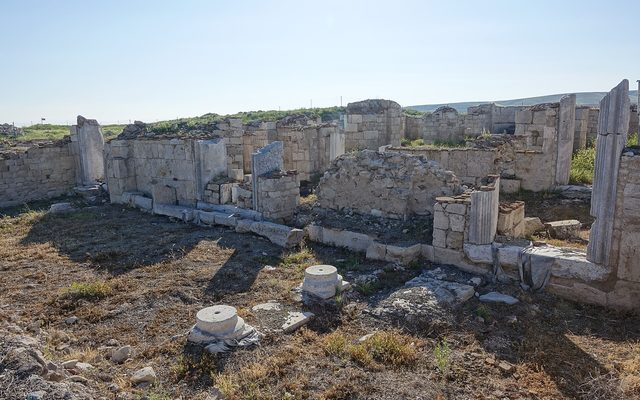
阿莫里乌姆古城阿菲永卡拉希萨尔 · 考古遗址 阿莫斯古城穆拉 · 考古遗址阿米宗古城艾登 · 考古遗址
阿莫斯古城穆拉 · 考古遗址阿米宗古城艾登 · 考古遗址 安纳托利亚堡垒伊斯坦布尔 · 城堡与历史建筑
安纳托利亚堡垒伊斯坦布尔 · 城堡与历史建筑 安纳托利亚文明博物馆安卡拉 · 博物馆
安纳托利亚文明博物馆安卡拉 · 博物馆 安纳托利亚活态村露天博物馆安卡拉 · 博物馆阿纳穆尔博物馆梅尔辛 · 博物馆
安纳托利亚活态村露天博物馆安卡拉 · 博物馆阿纳穆尔博物馆梅尔辛 · 博物馆 阿纳瓦尔扎遗址阿达纳 · 考古遗址
阿纳瓦尔扎遗址阿达纳 · 考古遗址 阿内穆里翁遗址梅尔辛 · 考古遗址
阿内穆里翁遗址梅尔辛 · 考古遗址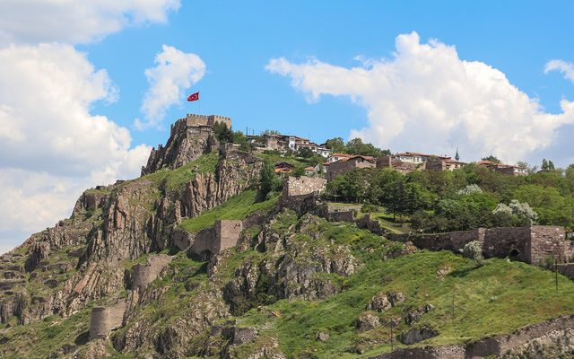
安卡拉城堡安卡拉 · 城堡与历史建筑 安卡拉玩具博物馆安卡拉 · 博物馆
安卡拉玩具博物馆安卡拉 · 博物馆 安卡拉罗马剧场安卡拉 · 考古遗址
安卡拉罗马剧场安卡拉 · 考古遗址 安塔利亚阿塔图尔克故居博物馆安塔利亚 · 博物馆
安塔利亚阿塔图尔克故居博物馆安塔利亚 · 博物馆 安塔利亚民族志博物馆安塔利亚 · 博物馆
安塔利亚民族志博物馆安塔利亚 · 博物馆 安塔利亚博物馆安塔利亚 · 博物馆安塔利亚墓葬博物馆安塔利亚 · 博物馆
安塔利亚博物馆安塔利亚 · 博物馆安塔利亚墓葬博物馆安塔利亚 · 博物馆 安塔利亚玩具博物馆安塔利亚 · 博物馆
安塔利亚玩具博物馆安塔利亚 · 博物馆 锡德拉古城安塔利亚 · 考古遗址
锡德拉古城安塔利亚 · 考古遗址 安坦德罗斯古城巴勒克埃西尔 · 考古遗址
安坦德罗斯古城巴勒克埃西尔 · 考古遗址 皮西迪亚的安条克遗址伊斯帕尔塔 · 考古遗址
皮西迪亚的安条克遗址伊斯帕尔塔 · 考古遗址 克拉古斯的安条克古城安塔利亚 · 考古遗址
克拉古斯的安条克古城安塔利亚 · 考古遗址 安提费洛斯古城安塔利亚 · 考古遗址
安提费洛斯古城安塔利亚 · 考古遗址 安提福尼提斯教堂吉尔内（凯里尼亚） · 宗教建筑
安提福尼提斯教堂吉尔内（凯里尼亚） · 宗教建筑 阿塔图尔克陵安卡拉 · 博物馆
阿塔图尔克陵安卡拉 · 博物馆 阿佩尔莱古城安塔利亚 · 考古遗址
阿佩尔莱古城安塔利亚 · 考古遗址 阿波罗斯明修斯神庙遗址恰纳卡莱 · 考古遗址
阿波罗斯明修斯神庙遗址恰纳卡莱 · 考古遗址 利基亚的阿波罗尼亚古城安塔利亚 · 考古遗址
利基亚的阿波罗尼亚古城安塔利亚 · 考古遗址 使徒安德烈修道院伊斯凯莱（特里科莫） · 宗教建筑
使徒安德烈修道院伊斯凯莱（特里科莫） · 宗教建筑 阿拉·居勒博物馆伊斯坦布尔 · 博物馆
阿拉·居勒博物馆伊斯坦布尔 · 博物馆 阿里亚索斯古城安塔利亚 · 考古遗址
阿里亚索斯古城安塔利亚 · 考古遗址 阿卡斯艺术中心伊兹密尔 · 博物馆阿尔内艾古城安塔利亚 · 考古遗址
阿卡斯艺术中心伊兹密尔 · 博物馆阿尔内艾古城安塔利亚 · 考古遗址 阿尔萨达古城穆拉 · 考古遗址
阿尔萨达古城穆拉 · 考古遗址 阿萨梅亚遗址阿德亚曼 · 考古遗址
阿萨梅亚遗址阿德亚曼 · 考古遗址 阿尔特当代艺术馆伊斯坦布尔 · 博物馆
阿尔特当代艺术馆伊斯坦布尔 · 博物馆 阿里坎达遗址安塔利亚 · 考古遗址
阿里坎达遗址安塔利亚 · 考古遗址 洞中人（七眠子）建筑群卡赫拉曼马拉什 · 宗教建筑
洞中人（七眠子）建筑群卡赫拉曼马拉什 · 宗教建筑 军事博物馆伊斯坦布尔 · 博物馆
军事博物馆伊斯坦布尔 · 博物馆 阿斯潘多斯安塔利亚 · 考古遗址
阿斯潘多斯安塔利亚 · 考古遗址 阿索斯遗址恰纳卡莱 · 考古遗址迪亚巴克尔阿塔图尔克故居博物馆迪亚巴克尔 · 博物馆
阿索斯遗址恰纳卡莱 · 考古遗址迪亚巴克尔阿塔图尔克故居博物馆迪亚巴克尔 · 博物馆 阿塔图尔克故居与铁路博物馆安卡拉 · 博物馆
阿塔图尔克故居与铁路博物馆安卡拉 · 博物馆 阿塔图尔克博物馆（希什利）伊斯坦布尔 · 博物馆乌沙克阿塔图尔克与民俗博物馆乌沙克 · 博物馆
阿塔图尔克博物馆（希什利）伊斯坦布尔 · 博物馆乌沙克阿塔图尔克与民俗博物馆乌沙克 · 博物馆 阿塔图尔克、雷迪夫与民族志博物馆科贾埃利 · 博物馆
阿塔图尔克、雷迪夫与民族志博物馆科贾埃利 · 博物馆 阿特拉斯 1948 伊斯坦布尔电影博物馆伊斯坦布尔 · 博物馆
阿特拉斯 1948 伊斯坦布尔电影博物馆伊斯坦布尔 · 博物馆 奥古斯都神庙安卡拉 · 考古遗址
奥古斯都神庙安卡拉 · 考古遗址 狩猎行宫博物馆科贾埃利 · 博物馆
狩猎行宫博物馆科贾埃利 · 博物馆 圣伊琳娜教堂伊斯坦布尔 · 宗教建筑
圣伊琳娜教堂伊斯坦布尔 · 宗教建筑 阿亚尼斯城堡凡城 · 考古遗址
阿亚尼斯城堡凡城 · 考古遗址 阿亚斯城堡（尤穆尔塔勒克）阿达纳 · 城堡与历史建筑
阿亚斯城堡（尤穆尔塔勒克）阿达纳 · 城堡与历史建筑 圣索菲亚历史与体验博物馆伊斯坦布尔 · 博物馆
圣索菲亚历史与体验博物馆伊斯坦布尔 · 博物馆 圣索菲亚大清真寺伊斯坦布尔 · 宗教建筑
圣索菲亚大清真寺伊斯坦布尔 · 宗教建筑 阿亚苏鲁克圣约翰大教堂遗址伊兹密尔 · 考古遗址
阿亚苏鲁克圣约翰大教堂遗址伊兹密尔 · 考古遗址 阿亚苏鲁克城堡伊兹密尔 · 城堡与历史建筑
阿亚苏鲁克城堡伊兹密尔 · 城堡与历史建筑 艾登考古博物馆艾登 · 博物馆圣三一巴西利卡伊斯凯莱（特里科莫） · 宗教建筑
艾登考古博物馆艾登 · 博物馆圣三一巴西利卡伊斯凯莱（特里科莫） · 宗教建筑 艾纳勒卡瓦克亭伊斯坦布尔 · 城堡与历史建筑
艾纳勒卡瓦克亭伊斯坦布尔 · 城堡与历史建筑 圣尼古拉斯纪念博物馆安塔利亚 · 博物馆圣墨丘利地下城阿克萨赖 · 地下城圣保罗之路安塔利亚 · 徒步路线
圣尼古拉斯纪念博物馆安塔利亚 · 博物馆圣墨丘利地下城阿克萨赖 · 地下城圣保罗之路安塔利亚 · 徒步路线 阿查纳土丘（阿拉拉赫）哈塔伊 · 考古遗址
阿查纳土丘（阿拉拉赫）哈塔伊 · 考古遗址 阿厄兹卡拉客栈阿克萨赖 · 城堡与历史建筑
阿厄兹卡拉客栈阿克萨赖 · 城堡与历史建筑 阿谢克·韦塞尔博物馆锡瓦斯 · 博物馆
阿谢克·韦塞尔博物馆锡瓦斯 · 博物馆 阿舍克勒土丘阿克萨赖 · 考古遗址
阿舍克勒土丘阿克萨赖 · 考古遗址 巴法湖自然公园穆拉 · 湖泊
巴法湖自然公园穆拉 · 湖泊 巴夫拉博物馆萨姆松 · 博物馆
巴夫拉博物馆萨姆松 · 博物馆 巴克拉斯城堡哈塔伊 · 城堡与历史建筑巴尔布拉古城布尔杜尔 · 考古遗址
巴克拉斯城堡哈塔伊 · 城堡与历史建筑巴尔布拉古城布尔杜尔 · 考古遗址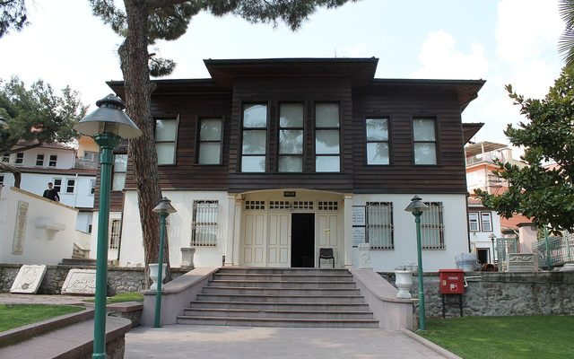
巴勒克埃西尔国民军博物馆巴勒克埃西尔 · 博物馆 圣鱼池（巴勒克勒湖）尚勒乌尔法 · 宗教建筑
圣鱼池（巴勒克勒湖）尚勒乌尔法 · 宗教建筑 班德尔马博物馆巴勒克埃西尔 · 博物馆
班德尔马博物馆巴勒克埃西尔 · 博物馆 班德尔马号轮船博物馆萨姆松 · 博物馆
班德尔马号轮船博物馆萨姆松 · 博物馆 野蛮博物馆莱夫科沙（尼科西亚） · 博物馆
野蛮博物馆莱夫科沙（尼科西亚） · 博物馆 巴尔吉利亚古城穆拉 · 考古遗址
巴尔吉利亚古城穆拉 · 考古遗址 巴特曼博物馆巴特曼 · 博物馆
巴特曼博物馆巴特曼 · 博物馆 西线司令部博物馆科尼亚 · 博物馆
西线司令部博物馆科尼亚 · 博物馆 巴伊布尔特巴克瑟博物馆巴伊布尔特 · 博物馆贝尔迪比洞穴安塔利亚 · 考古遗址
巴伊布尔特巴克瑟博物馆巴伊布尔特 · 博物馆贝尔迪比洞穴安塔利亚 · 考古遗址 贝拉派斯修道院吉尔内（凯里尼亚） · 宗教建筑
贝拉派斯修道院吉尔内（凯里尼亚） · 宗教建筑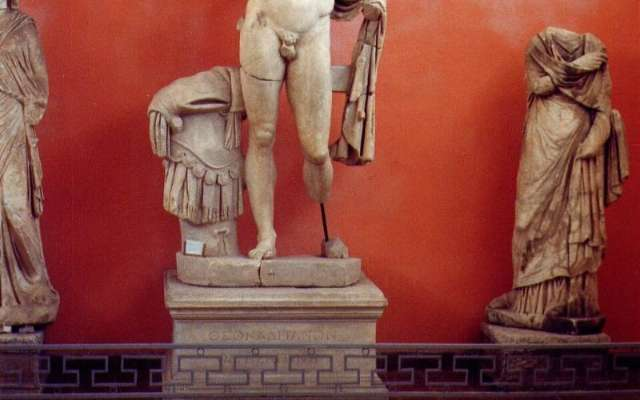
贝尔加马博物馆伊兹密尔 · 博物馆 贝亚济特浴场文化博物馆伊斯坦布尔 · 博物馆
贝亚济特浴场文化博物馆伊斯坦布尔 · 博物馆 贝杰苏尔坦土丘代尼兹利 · 考古遗址
贝杰苏尔坦土丘代尼兹利 · 考古遗址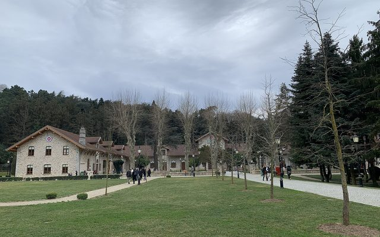
贝伊科兹玻璃水晶博物馆伊斯坦布尔 · 博物馆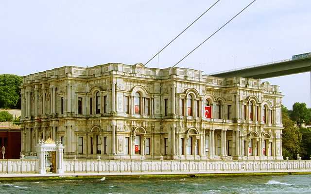
贝勒贝伊宫伊斯坦布尔 · 城堡与历史建筑 贝帕扎勒活态博物馆安卡拉 · 博物馆
贝帕扎勒活态博物馆安卡拉 · 博物馆 贝伊谢希尔湖国家公园科尼亚 · 湖泊贝什科纳克拉尔民族志博物馆与马拉蒂亚传统民居马拉蒂亚 · 博物馆
贝伊谢希尔湖国家公园科尼亚 · 湖泊贝什科纳克拉尔民族志博物馆与马拉蒂亚传统民居马拉蒂亚 · 博物馆 贝什帕尔马克山脉（五指山）吉尔内（凯里尼亚） · 自然景观比莱吉克博物馆比莱吉克 · 博物馆
贝什帕尔马克山脉（五指山）吉尔内（凯里尼亚） · 自然景观比莱吉克博物馆比莱吉克 · 博物馆 宾泰佩吕底亚古坟群马尼萨 · 考古遗址
宾泰佩吕底亚古坟群马尼萨 · 考古遗址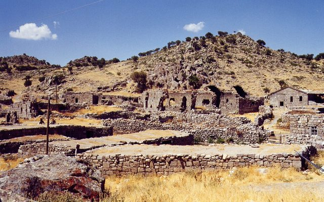
千零一教堂卡拉曼 · 考古遗址 千柱蓄水池（菲洛克塞诺斯蓄水池）伊斯坦布尔 · 城堡与历史建筑
千柱蓄水池（菲洛克塞诺斯蓄水池）伊斯坦布尔 · 城堡与历史建筑 宾格尔浮岛宾格尔 · 湖泊
宾格尔浮岛宾格尔 · 湖泊 比尔吉查克尔阿阿宅邸伊兹密尔 · 博物馆比特利斯民族志博物馆比特利斯 · 博物馆
比尔吉查克尔阿阿宅邸伊兹密尔 · 博物馆比特利斯民族志博物馆比特利斯 · 博物馆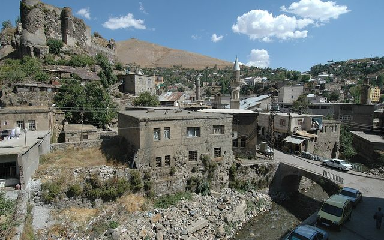
比特利斯城堡比特利斯 · 城堡与历史建筑 布劳恩多斯遗址乌沙克 · 考古遗址
布劳恩多斯遗址乌沙克 · 考古遗址 博德鲁姆古剧场穆拉 · 考古遗址博德鲁姆塞尔切港玻璃沉船展厅穆拉 · 博物馆
博德鲁姆古剧场穆拉 · 考古遗址博德鲁姆塞尔切港玻璃沉船展厅穆拉 · 博物馆 博德鲁姆水下考古博物馆穆拉 · 博物馆
博德鲁姆水下考古博物馆穆拉 · 博物馆 博拉曼城堡奥尔杜 · 城堡与历史建筑
博拉曼城堡奥尔杜 · 城堡与历史建筑 博卢博物馆博卢 · 博物馆
博卢博物馆博卢 · 博物馆 邦朱克卢土丘科尼亚 · 考古遗址
邦朱克卢土丘科尼亚 · 考古遗址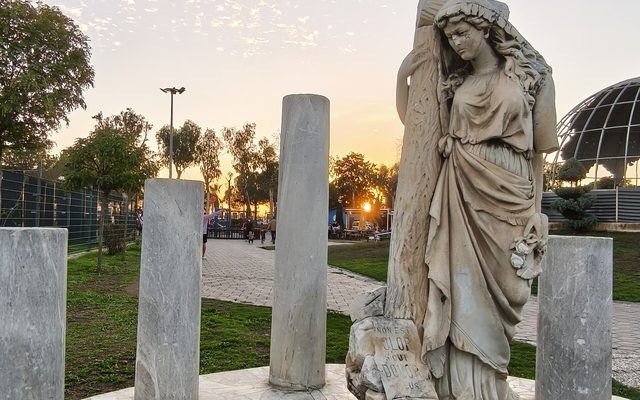
博斯坦勒露天考古博物馆伊兹密尔 · 博物馆 瓦伦斯引水渠（博兹多安拱桥）伊斯坦布尔 · 城堡与历史建筑博阿泰佩奶酪博物馆卡尔斯 · 博物馆
瓦伦斯引水渠（博兹多安拱桥）伊斯坦布尔 · 城堡与历史建筑博阿泰佩奶酪博物馆卡尔斯 · 博物馆 博阿兹柯伊博物馆乔鲁姆 · 博物馆
博阿兹柯伊博物馆乔鲁姆 · 博物馆 布法文托城堡吉尔内（凯里尼亚） · 城堡与历史建筑
布法文托城堡吉尔内（凯里尼亚） · 城堡与历史建筑 保加利亚圣斯特凡教堂（铁教堂）伊斯坦布尔 · 宗教建筑
保加利亚圣斯特凡教堂（铁教堂）伊斯坦布尔 · 宗教建筑 布尔杜尔博物馆布尔杜尔 · 博物馆
布尔杜尔博物馆布尔杜尔 · 博物馆 布尔萨考古博物馆布尔萨 · 博物馆
布尔萨考古博物馆布尔萨 · 博物馆 布尔萨阿塔图尔克故居博物馆布尔萨 · 博物馆
布尔萨阿塔图尔克故居博物馆布尔萨 · 博物馆 布尔萨城市博物馆布尔萨 · 博物馆
布尔萨城市博物馆布尔萨 · 博物馆 布尔萨土耳其伊斯兰艺术博物馆布尔萨 · 博物馆
布尔萨土耳其伊斯兰艺术博物馆布尔萨 · 博物馆 布尔萨大清真寺布尔萨 · 宗教建筑
布尔萨大清真寺布尔萨 · 宗教建筑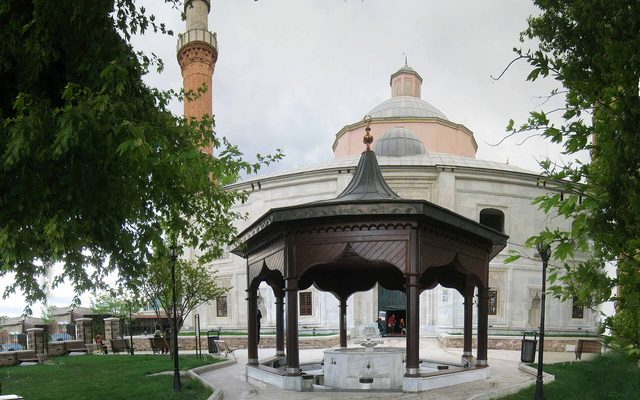
布尔萨绿色清真寺与绿陵布尔萨 · 宗教建筑伊兹尼克湖中巴西利卡布尔萨 · 宗教建筑 大阿迦经学院阿马西亚 · 宗教建筑
大阿迦经学院阿马西亚 · 宗教建筑 大客栈（比于克汗）莱夫科沙（尼科西亚） · 城堡与历史建筑
大客栈（比于克汗）莱夫科沙（尼科西亚） · 城堡与历史建筑 大皇宫马赛克博物馆伊斯坦布尔 · 博物馆
大皇宫马赛克博物馆伊斯坦布尔 · 博物馆 贾贾贝伊经学院克尔谢希尔 · 宗教建筑
贾贾贝伊经学院克尔谢希尔 · 宗教建筑 贾希特·瑟特克·塔兰哲故居民族志博物馆迪亚巴克尔 · 博物馆
贾希特·瑟特克·塔兰哲故居民族志博物馆迪亚巴克尔 · 博物馆 地狱之口洞穴宗古尔达克 · 自然景观
地狱之口洞穴宗古尔达克 · 自然景观 森代雷桥阿德亚曼 · 城堡与历史建筑
森代雷桥阿德亚曼 · 城堡与历史建筑 岑德雷艺术博物馆伊斯坦布尔 · 博物馆
岑德雷艺术博物馆伊斯坦布尔 · 博物馆 切尔现代艺术中心安卡拉 · 博物馆
切尔现代艺术中心安卡拉 · 博物馆 金吉客栈卡拉比克 · 城堡与历史建筑
金吉客栈卡拉比克 · 城堡与历史建筑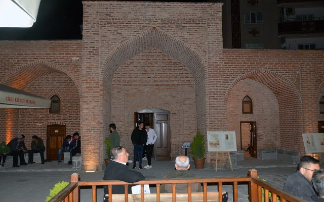
吉兹雷红色经学院舍尔纳克 · 城堡与历史建筑 朱马勒克泽克村布尔萨 · 城堡与历史建筑
朱马勒克泽克村布尔萨 · 城堡与历史建筑 共和国博物馆安卡拉 · 博物馆
共和国博物馆安卡拉 · 博物馆 达拉曼河穆拉 · 漂流
达拉曼河穆拉 · 漂流 达拉遗址马尔丁 · 考古遗址
达拉遗址马尔丁 · 考古遗址 达斯库利翁古城巴勒克埃西尔 · 考古遗址达夫拉兹滑雪场伊斯帕尔塔 · 滑雪场代米尔柯伊铸造厂克尔克拉雷利 · 考古遗址
达斯库利翁古城巴勒克埃西尔 · 考古遗址达夫拉兹滑雪场伊斯帕尔塔 · 滑雪场代米尔柯伊铸造厂克尔克拉雷利 · 考古遗址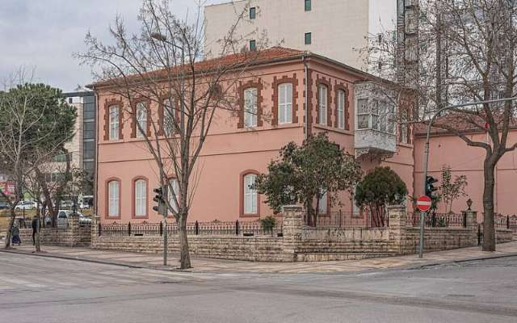
代尼兹利阿塔图尔克与民族志博物馆代尼兹利 · 博物馆 代尼兹利城市博物馆代尼兹利 · 博物馆
代尼兹利城市博物馆代尼兹利 · 博物馆 特里波利斯遗址代尼兹利 · 考古遗址特庇古城卡拉曼 · 考古遗址
特里波利斯遗址代尼兹利 · 考古遗址特庇古城卡拉曼 · 考古遗址 德尔维什帕夏宅邸莱夫科沙（尼科西亚） · 博物馆
德尔维什帕夏宅邸莱夫科沙（尼科西亚） · 博物馆 国家公墓安卡拉 · 城堡与历史建筑
国家公墓安卡拉 · 城堡与历史建筑 革命牌汽车博物馆埃斯基谢希尔 · 博物馆
革命牌汽车博物馆埃斯基谢希尔 · 博物馆 番红花修道院（代尔祖法兰）马尔丁 · 宗教建筑
番红花修道院（代尔祖法兰）马尔丁 · 宗教建筑 底格里斯隧道（比尔克莱恩洞）迪亚巴克尔 · 考古遗址
底格里斯隧道（比尔克莱恩洞）迪亚巴克尔 · 考古遗址 迪迪姆阿波罗神庙艾登 · 考古遗址
迪迪姆阿波罗神庙艾登 · 考古遗址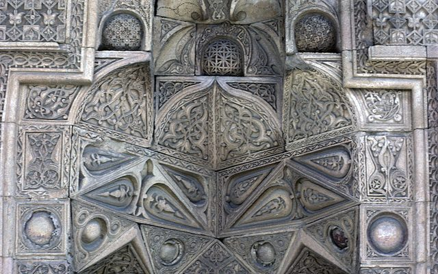
迪夫里伊大清真寺和医院锡瓦斯 · 宗教建筑 迪亚巴克尔考古博物馆迪亚巴克尔 · 博物馆
迪亚巴克尔考古博物馆迪亚巴克尔 · 博物馆 迪亚巴克尔城墙迪亚巴克尔 · 城堡与历史建筑
迪亚巴克尔城墙迪亚巴克尔 · 城堡与历史建筑 迪亚巴克尔大清真寺迪亚巴克尔 · 宗教建筑
迪亚巴克尔大清真寺迪亚巴克尔 · 宗教建筑 多尔玛巴赫切宫伊斯坦布尔 · 城堡与历史建筑自然历史博物馆布尔杜尔 · 博物馆
多尔玛巴赫切宫伊斯坦布尔 · 城堡与历史建筑自然历史博物馆布尔杜尔 · 博物馆 杜普尼萨洞克尔克拉雷利 · 自然景观
杜普尼萨洞克尔克拉雷利 · 自然景观 杜登瀑布安塔利亚 · 瀑布杜吕克（多利克）加济安泰普 · 考古遗址
杜登瀑布安塔利亚 · 瀑布杜吕克（多利克）加济安泰普 · 考古遗址 埃迪尔内大犹太会堂埃迪尔内 · 宗教建筑埃迪尔内希德尔勒克炮台巴尔干历史博物馆埃迪尔内 · 博物馆
埃迪尔内大犹太会堂埃迪尔内 · 宗教建筑埃迪尔内希德尔勒克炮台巴尔干历史博物馆埃迪尔内 · 博物馆 埃迪尔内马其顿塔埃迪尔内 · 城堡与历史建筑
埃迪尔内马其顿塔埃迪尔内 · 城堡与历史建筑 埃迪尔内博物馆埃迪尔内 · 博物馆
埃迪尔内博物馆埃迪尔内 · 博物馆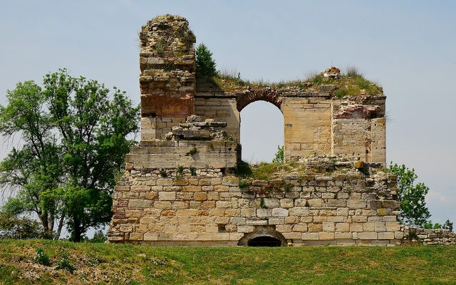
埃迪尔内宫（新宫）遗址埃迪尔内 · 考古遗址 埃迪尔内塞利米耶清真寺埃迪尔内 · 宗教建筑以弗所体验博物馆伊兹密尔 · 博物馆
埃迪尔内塞利米耶清真寺埃迪尔内 · 宗教建筑以弗所体验博物馆伊兹密尔 · 博物馆 以弗所博物馆伊兹密尔 · 博物馆
以弗所博物馆伊兹密尔 · 博物馆 以弗所山坡住宅伊兹密尔 · 考古遗址
以弗所山坡住宅伊兹密尔 · 考古遗址 埃弗拉通珀纳尔赫梯水神殿科尼亚 · 考古遗址爱琴大学自然历史博物馆伊兹密尔 · 博物馆
埃弗拉通珀纳尔赫梯水神殿科尼亚 · 考古遗址爱琴大学自然历史博物馆伊兹密尔 · 博物馆 埃莱乌萨·塞巴斯特古城梅尔辛 · 考古遗址埃拉泽博物馆埃拉泽 · 博物馆埃尔比斯坦城市博物馆卡赫拉曼马拉什 · 博物馆
埃莱乌萨·塞巴斯特古城梅尔辛 · 考古遗址埃拉泽博物馆埃拉泽 · 博物馆埃尔比斯坦城市博物馆卡赫拉曼马拉什 · 博物馆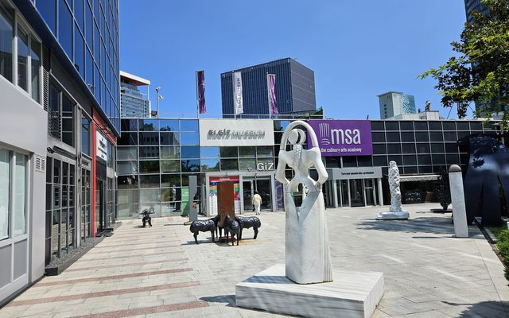
埃尔吉兹当代艺术博物馆伊斯坦布尔 · 博物馆埃尔马勒博物馆安塔利亚 · 博物馆埃米内·格古什美食博物馆加济安泰普 · 博物馆 埃米尔苏丹清真寺布尔萨 · 宗教建筑
埃米尔苏丹清真寺布尔萨 · 宗教建筑 埃内兹城堡（艾诺斯）埃迪尔内 · 城堡与历史建筑
埃内兹城堡（艾诺斯）埃迪尔内 · 城堡与历史建筑 恩科米（阿拉西亚）遗址加齐马古萨（法马古斯塔） · 考古遗址
恩科米（阿拉西亚）遗址加齐马古萨（法马古斯塔） · 考古遗址 埃尔吉耶斯滑雪场开塞利 · 滑雪场埃雷利博物馆科尼亚 · 博物馆
埃尔吉耶斯滑雪场开塞利 · 滑雪场埃雷利博物馆科尼亚 · 博物馆 塔特勒贾瀑布群（埃尔费莱克）锡诺普 · 瀑布
塔特勒贾瀑布群（埃尔费莱克）锡诺普 · 瀑布 埃里姆坦考古与艺术博物馆安卡拉 · 博物馆埃尔梅内克艾哈迈德·凯莱绍卢考古与民族志博物馆卡拉曼 · 博物馆
埃里姆坦考古与艺术博物馆安卡拉 · 博物馆埃尔梅内克艾哈迈德·凯莱绍卢考古与民族志博物馆卡拉曼 · 博物馆 埃律特莱古城伊兹密尔 · 考古遗址
埃律特莱古城伊兹密尔 · 考古遗址 埃尔津詹博物馆埃尔津詹 · 博物馆
埃尔津詹博物馆埃尔津詹 · 博物馆 埃尔祖鲁姆阿塔图尔克故居博物馆埃尔祖鲁姆 · 博物馆
埃尔祖鲁姆阿塔图尔克故居博物馆埃尔祖鲁姆 · 博物馆 埃尔祖鲁姆城堡埃尔祖鲁姆 · 城堡与历史建筑
埃尔祖鲁姆城堡埃尔祖鲁姆 · 城堡与历史建筑 埃尔祖鲁姆博物馆埃尔祖鲁姆 · 博物馆埃尔祖鲁姆绘画与雕塑博物馆埃尔祖鲁姆 · 博物馆
埃尔祖鲁姆博物馆埃尔祖鲁姆 · 博物馆埃尔祖鲁姆绘画与雕塑博物馆埃尔祖鲁姆 · 博物馆 古士麦那伊兹密尔 · 考古遗址
古士麦那伊兹密尔 · 考古遗址 埃斯基谢希尔解放博物馆埃斯基谢希尔 · 博物馆埃滕纳古城安塔利亚 · 考古遗址
埃斯基谢希尔解放博物馆埃斯基谢希尔 · 博物馆埃滕纳古城安塔利亚 · 考古遗址 埃蒂考古博物馆埃斯基谢希尔 · 博物馆
埃蒂考古博物馆埃斯基谢希尔 · 博物馆 民族志博物馆安卡拉 · 博物馆
民族志博物馆安卡拉 · 博物馆 艾弗利亚·切莱比之路屈塔希亚 · 徒步路线
艾弗利亚·切莱比之路屈塔希亚 · 徒步路线 埃于普苏丹清真寺伊斯坦布尔 · 宗教建筑
埃于普苏丹清真寺伊斯坦布尔 · 宗教建筑 埃伊尔城堡与先知陵墓迪亚巴克尔 · 城堡与历史建筑
埃伊尔城堡与先知陵墓迪亚巴克尔 · 城堡与历史建筑 埃伊尔迪尔湖伊斯帕尔塔 · 湖泊
埃伊尔迪尔湖伊斯帕尔塔 · 湖泊 教育漫画博物馆埃斯基谢希尔 · 博物馆
教育漫画博物馆埃斯基谢希尔 · 博物馆 法瑟拉尔纪念碑科尼亚 · 考古遗址普世牧首区与圣乔治教堂伊斯坦布尔 · 宗教建筑
法瑟拉尔纪念碑科尼亚 · 考古遗址普世牧首区与圣乔治教堂伊斯坦布尔 · 宗教建筑 费内巴切博物馆伊斯坦布尔 · 博物馆
费内巴切博物馆伊斯坦布尔 · 博物馆 费特希耶盖米莱尔岛穆拉 · 考古遗址
费特希耶盖米莱尔岛穆拉 · 考古遗址 费特希耶卡亚柯伊遗址穆拉 · 考古遗址
费特希耶卡亚柯伊遗址穆拉 · 考古遗址 费特希耶莱顿遗址穆拉 · 考古遗址
费特希耶莱顿遗址穆拉 · 考古遗址 费特希耶博物馆伊斯坦布尔 · 博物馆
费特希耶博物馆伊斯坦布尔 · 博物馆 费特希耶博物馆穆拉 · 博物馆
费特希耶博物馆穆拉 · 博物馆 费特希耶皮纳拉遗址穆拉 · 考古遗址
费特希耶皮纳拉遗址穆拉 · 考古遗址 费特希耶特洛斯遗址穆拉 · 考古遗址菲尔达默蓄水池伊斯坦布尔 · 城堡与历史建筑菲利奥斯（提奥斯）遗址宗古尔达克 · 考古遗址
费特希耶特洛斯遗址穆拉 · 考古遗址菲尔达默蓄水池伊斯坦布尔 · 城堡与历史建筑菲利奥斯（提奥斯）遗址宗古尔达克 · 考古遗址 弗洛里亚阿塔图尔克海上别墅伊斯坦布尔 · 博物馆
弗洛里亚阿塔图尔克海上别墅伊斯坦布尔 · 博物馆 弗里吉亚之路埃斯基谢希尔 · 徒步路线
弗里吉亚之路埃斯基谢希尔 · 徒步路线 弗尔蒂纳溪里泽 · 漂流加加伊古城安塔利亚 · 考古遗址
弗尔蒂纳溪里泽 · 漂流加加伊古城安塔利亚 · 考古遗址 加拉塔梅夫拉维修道院博物馆伊斯坦布尔 · 博物馆
加拉塔梅夫拉维修道院博物馆伊斯坦布尔 · 博物馆 加齐亭迪亚巴克尔 · 城堡与历史建筑
加齐亭迪亚巴克尔 · 城堡与历史建筑 加齐博物馆萨姆松 · 博物馆
加齐博物馆萨姆松 · 博物馆 加济安泰普考古博物馆加济安泰普 · 博物馆
加济安泰普考古博物馆加济安泰普 · 博物馆 加济安泰普城堡加济安泰普 · 城堡与历史建筑
加济安泰普城堡加济安泰普 · 城堡与历史建筑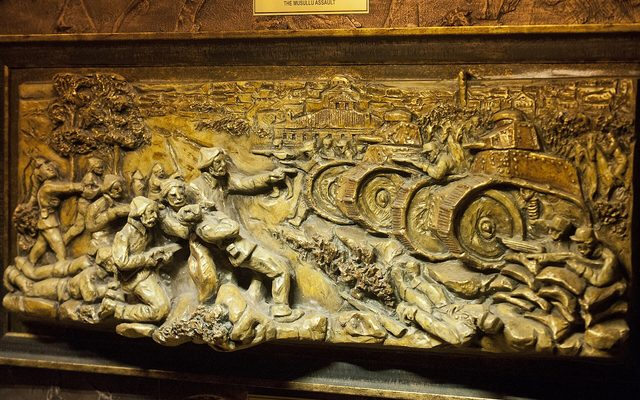
加济安泰普保卫战全景博物馆加济安泰普 · 博物馆 盖利博卢战争博物馆恰纳卡莱 · 博物馆
盖利博卢战争博物馆恰纳卡莱 · 博物馆 加利波利历史遗址恰纳卡莱 · 考古遗址
加利波利历史遗址恰纳卡莱 · 考古遗址 盖尔加圣所艾登 · 考古遗址日耳曼尼西亚马赛克区卡赫拉曼马拉什 · 考古遗址
盖尔加圣所艾登 · 考古遗址日耳曼尼西亚马赛克区卡赫拉曼马拉什 · 考古遗址 吉雷松城堡吉雷松 · 城堡与历史建筑
吉雷松城堡吉雷松 · 城堡与历史建筑 吉雷松博物馆吉雷松 · 博物馆
吉雷松博物馆吉雷松 · 博物馆 吉尔莱维克瀑布埃尔津詹 · 瀑布
吉尔莱维克瀑布埃尔津詹 · 瀑布 凯里尼亚山地步道吉尔内（凯里尼亚） · 徒步路线
凯里尼亚山地步道吉尔内（凯里尼亚） · 徒步路线 凯里尼亚城堡与沉船博物馆吉尔内（凯里尼亚） · 城堡与历史建筑
凯里尼亚城堡与沉船博物馆吉尔内（凯里尼亚） · 城堡与历史建筑 凯里尼亚圣像博物馆吉尔内（凯里尼亚） · 博物馆
凯里尼亚圣像博物馆吉尔内（凯里尼亚） · 博物馆 格克卡莱梅尔辛 · 考古遗址
格克卡莱梅尔辛 · 考古遗址 格克亚伊基金会国际象棋博物馆安卡拉 · 博物馆
格克亚伊基金会国际象棋博物馆安卡拉 · 博物馆 格尔久克火山口湖自然公园伊斯帕尔塔 · 湖泊
格尔久克火山口湖自然公园伊斯帕尔塔 · 湖泊 格尔亚兹村（林达库斯河畔阿波罗尼亚）布尔萨 · 考古遗址
格尔亚兹村（林达库斯河畔阿波罗尼亚）布尔萨 · 考古遗址 戈伊努克峡谷安塔利亚 · 峡谷
戈伊努克峡谷安塔利亚 · 峡谷 格兹内城堡梅尔辛 · 城堡与历史建筑
格兹内城堡梅尔辛 · 城堡与历史建筑 居尔谢希尔圣约翰教堂内夫谢希尔 · 宗教建筑居米什哈内博物馆居米什哈内 · 博物馆
居尔谢希尔圣约翰教堂内夫谢希尔 · 宗教建筑居米什哈内博物馆居米什哈内 · 博物馆 居米什凯森陵墓穆拉 · 考古遗址
居米什凯森陵墓穆拉 · 考古遗址 居米什莱尔修道院与地下城尼代 · 地下城
居米什莱尔修道院与地下城尼代 · 地下城 居普居普奥卢宅邸民族志博物馆开塞利 · 博物馆
居普居普奥卢宅邸民族志博物馆开塞利 · 博物馆 居泽尔尤尔特考古与自然历史博物馆居泽尔尤尔特（莫尔富） · 博物馆
居泽尔尤尔特考古与自然历史博物馆居泽尔尤尔特（莫尔富） · 博物馆 居泽尔尤尔特与修道院谷阿克萨赖 · 宗教建筑
居泽尔尤尔特与修道院谷阿克萨赖 · 宗教建筑 克图茨修道院凡城 · 宗教建筑
克图茨修道院凡城 · 宗教建筑 哈比卜·内贾尔清真寺哈塔伊 · 宗教建筑
哈比卜·内贾尔清真寺哈塔伊 · 宗教建筑 哈吉·拜拉姆·韦利清真寺安卡拉 · 宗教建筑
哈吉·拜拉姆·韦利清真寺安卡拉 · 宗教建筑 哈哲贝克塔什博物馆内夫谢希尔 · 博物馆
哈哲贝克塔什博物馆内夫谢希尔 · 博物馆 哈吉拉尔土丘布尔杜尔 · 考古遗址
哈吉拉尔土丘布尔杜尔 · 考古遗址 哈德良门安塔利亚 · 城堡与历史建筑哈德良波利斯遗址卡拉比克 · 考古遗址
哈德良门安塔利亚 · 城堡与历史建筑哈德良波利斯遗址卡拉比克 · 考古遗址 “7·15”记忆博物馆伊斯坦布尔 · 博物馆哈卡里广场经学院哈卡里 · 城堡与历史建筑
“7·15”记忆博物馆伊斯坦布尔 · 博物馆哈卡里广场经学院哈卡里 · 城堡与历史建筑 哈莱普利巴赫切马赛克博物馆尚勒乌尔法 · 博物馆哈米迪耶炮台与恰纳卡莱战役历史博物馆恰纳卡莱 · 博物馆
哈莱普利巴赫切马赛克博物馆尚勒乌尔法 · 博物馆哈米迪耶炮台与恰纳卡莱战役历史博物馆恰纳卡莱 · 博物馆 巴鲁尔客栈尚勒乌尔法 · 城堡与历史建筑哈尔比耶瀑布哈塔伊 · 瀑布
巴鲁尔客栈尚勒乌尔法 · 城堡与历史建筑哈尔比耶瀑布哈塔伊 · 瀑布 哈尔普特城堡埃拉泽 · 城堡与历史建筑
哈尔普特城堡埃拉泽 · 城堡与历史建筑 哈兰遗址尚勒乌尔法 · 考古遗址
哈兰遗址尚勒乌尔法 · 考古遗址 哈尔谢纳城堡阿马西亚 · 城堡与历史建筑
哈尔谢纳城堡阿马西亚 · 城堡与历史建筑 哈桑帕夏客栈迪亚巴克尔 · 城堡与历史建筑
哈桑帕夏客栈迪亚巴克尔 · 城堡与历史建筑 哈桑·叙泽尔民俗博物馆加济安泰普 · 博物馆
哈桑·叙泽尔民俗博物馆加济安泰普 · 博物馆 哈桑凯伊夫博物馆与遗址巴特曼 · 考古遗址
哈桑凯伊夫博物馆与遗址巴特曼 · 考古遗址 哈塔伊考古博物馆哈塔伊 · 博物馆哈塔伊内吉米·阿斯富罗卢考古博物馆哈塔伊 · 博物馆
哈塔伊考古博物馆哈塔伊 · 博物馆哈塔伊内吉米·阿斯富罗卢考古博物馆哈塔伊 · 博物馆 安卡拉空军博物馆安卡拉 · 博物馆
安卡拉空军博物馆安卡拉 · 博物馆 圣使徒教堂（昆贝特清真寺）卡尔斯 · 宗教建筑哈夫扎阿塔图尔克故居萨姆松 · 博物馆
圣使徒教堂（昆贝特清真寺）卡尔斯 · 宗教建筑哈夫扎阿塔图尔克故居萨姆松 · 博物馆 哈扎尔湖埃拉泽 · 湖泊
哈扎尔湖埃拉泽 · 湖泊 哈泽兰拉尔宅邸阿马西亚 · 博物馆
哈泽兰拉尔宅邸阿马西亚 · 博物馆 赫勒斯纪念碑恰纳卡莱 · 考古遗址
赫勒斯纪念碑恰纳卡莱 · 考古遗址 拉特莫斯的赫拉克利亚古城穆拉 · 考古遗址
拉特莫斯的赫拉克利亚古城穆拉 · 考古遗址 萨尔巴凯的赫拉克利亚代尼兹利 · 考古遗址
萨尔巴凯的赫拉克利亚代尼兹利 · 考古遗址 希拉波利斯（棉花堡）考古博物馆代尼兹利 · 博物馆希尔米·纳基普奥卢相机博物馆伊斯坦布尔 · 博物馆希萨特活历史与立体模型博物馆伊斯坦布尔 · 博物馆
希拉波利斯（棉花堡）考古博物馆代尼兹利 · 博物馆希尔米·纳基普奥卢相机博物馆伊斯坦布尔 · 博物馆希萨特活历史与立体模型博物馆伊斯坦布尔 · 博物馆 赫梯之路乔鲁姆 · 徒步路线
赫梯之路乔鲁姆 · 徒步路线 霍尔马峡谷卡斯塔莫努 · 峡谷
霍尔马峡谷卡斯塔莫努 · 峡谷 霍沙普城堡凡城 · 城堡与历史建筑希拉里马古城穆拉 · 考古遗址
霍沙普城堡凡城 · 城堡与历史建筑希拉里马古城穆拉 · 考古遗址 亚索斯遗址穆拉 · 考古遗址
亚索斯遗址穆拉 · 考古遗址 伊德贝索斯古城安塔利亚 · 考古遗址
伊德贝索斯古城安塔利亚 · 考古遗址 椴树亭（伊赫拉穆尔亭）伊斯坦布尔 · 城堡与历史建筑
椴树亭（伊赫拉穆尔亭）伊斯坦布尔 · 城堡与历史建筑 厄赫拉热峡谷阿克萨赖 · 考古遗址
厄赫拉热峡谷阿克萨赖 · 考古遗址 伊尔加兹滑雪场卡斯塔莫努 · 滑雪场
伊尔加兹滑雪场卡斯塔莫努 · 滑雪场 约塔佩古城安塔利亚 · 考古遗址
约塔佩古城安塔利亚 · 考古遗址 伊尔甘德桥布尔萨 · 城堡与历史建筑伊辛达古城安塔利亚 · 考古遗址
伊尔甘德桥布尔萨 · 城堡与历史建筑伊辛达古城安塔利亚 · 考古遗址 伊斯帕尔塔博物馆伊斯帕尔塔 · 博物馆
伊斯帕尔塔博物馆伊斯帕尔塔 · 博物馆 伊迪尔土耳其烈士纪念碑与博物馆伊迪尔 · 博物馆宪兵博物馆安卡拉 · 博物馆
伊迪尔土耳其烈士纪念碑与博物馆伊迪尔 · 博物馆宪兵博物馆安卡拉 · 博物馆 尤利奥波利斯墓地安卡拉 · 考古遗址
尤利奥波利斯墓地安卡拉 · 考古遗址 查士丁尼桥（五桥）萨卡里亚 · 城堡与历史建筑
查士丁尼桥（五桥）萨卡里亚 · 城堡与历史建筑 卡巴泰佩展示中心恰纳卡莱 · 博物馆
卡巴泰佩展示中心恰纳卡莱 · 博物馆 卡迪菲城堡（帕戈斯山）伊兹密尔 · 城堡与历史建筑
卡迪菲城堡（帕戈斯山）伊兹密尔 · 城堡与历史建筑 卡迪扬达古城穆拉 · 考古遗址卡德城堡遗址艾登 · 考古遗址卡赫拉曼卡赞“7·15”烈士与民主博物馆安卡拉 · 博物馆
卡迪扬达古城穆拉 · 考古遗址卡德城堡遗址艾登 · 考古遗址卡赫拉曼卡赞“7·15”烈士与民主博物馆安卡拉 · 博物馆 卡赫拉曼马拉什博物馆卡赫拉曼马拉什 · 博物馆
卡赫拉曼马拉什博物馆卡赫拉曼马拉什 · 博物馆 卡赫塔新堡遗址阿德亚曼 · 考古遗址
卡赫塔新堡遗址阿德亚曼 · 考古遗址 卡曼卡莱霍裕克考古博物馆克尔谢希尔 · 考古遗址坎迪利地震博物馆伊斯坦布尔 · 博物馆坎迪巴古城安塔利亚 · 考古遗址
卡曼卡莱霍裕克考古博物馆克尔谢希尔 · 考古遗址坎迪利地震博物馆伊斯坦布尔 · 博物馆坎迪巴古城安塔利亚 · 考古遗址 坎勒迪瓦内遗址梅尔辛 · 考古遗址
坎勒迪瓦内遗址梅尔辛 · 考古遗址 坎勒迪瓦内（卡尼特利斯）梅尔辛 · 考古遗址
坎勒迪瓦内（卡尼特利斯）梅尔辛 · 考古遗址 坎塔拉城堡伊斯凯莱（特里科莫） · 城堡与历史建筑
坎塔拉城堡伊斯凯莱（特里科莫） · 城堡与历史建筑 卡普兹巴什瀑布群开塞利 · 瀑布
卡普兹巴什瀑布群开塞利 · 瀑布 卡珀勒卡亚岩墓乔鲁姆 · 考古遗址
卡珀勒卡亚岩墓乔鲁姆 · 考古遗址 卡拉贝尔岩石浮雕伊兹密尔 · 考古遗址
卡拉贝尔岩石浮雕伊兹密尔 · 考古遗址 番红花城博物馆卡拉比克 · 博物馆
番红花城博物馆卡拉比克 · 博物馆 卡拉贾苏民族志博物馆艾登 · 博物馆
卡拉贾苏民族志博物馆艾登 · 博物馆 黑海埃雷利博物馆宗古尔达克 · 博物馆
黑海埃雷利博物馆宗古尔达克 · 博物馆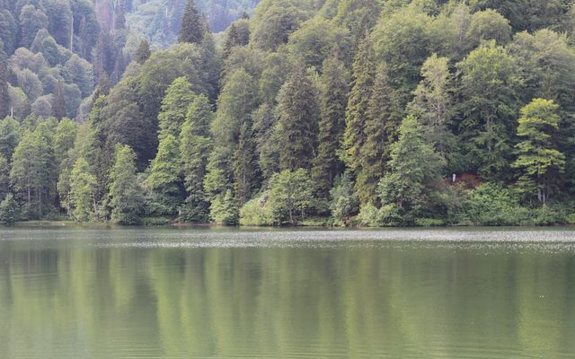
黑湖（博尔奇卡）阿尔特温 · 湖泊 卡拉汗泰佩遗址尚勒乌尔法 · 考古遗址
卡拉汗泰佩遗址尚勒乌尔法 · 考古遗址 卡拉因洞穴安塔利亚 · 自然景观
卡拉因洞穴安塔利亚 · 自然景观 卡拉卡巴克勒遗址梅尔辛 · 考古遗址
卡拉卡巴克勒遗址梅尔辛 · 考古遗址 卡拉库什古坟阿德亚曼 · 考古遗址
卡拉库什古坟阿德亚曼 · 考古遗址 卡拉曼博物馆卡拉曼 · 博物馆
卡拉曼博物馆卡拉曼 · 博物馆 黑暗峡谷埃尔津詹 · 峡谷
黑暗峡谷埃尔津詹 · 峡谷 卡拉塔伊博物馆（瓷砖博物馆）科尼亚 · 博物馆
卡拉塔伊博物馆（瓷砖博物馆）科尼亚 · 博物馆 卡拉泰佩—阿斯兰塔什博物馆与遗址奥斯曼尼耶 · 考古遗址
卡拉泰佩—阿斯兰塔什博物馆与遗址奥斯曼尼耶 · 考古遗址 卡里亚之路穆拉 · 徒步路线
卡里亚之路穆拉 · 徒步路线 卡里耶清真寺（科拉教堂）伊斯坦布尔 · 宗教建筑
卡里耶清真寺（科拉教堂）伊斯坦布尔 · 宗教建筑 卡尔凯美什古城加济安泰普 · 考古遗址
卡尔凯美什古城加济安泰普 · 考古遗址 卡尔帕斯国家公园与金沙滩伊斯凯莱（特里科莫） · 自然景观
卡尔帕斯国家公园与金沙滩伊斯凯莱（特里科莫） · 自然景观 卡尔斯高加索战线战争史博物馆卡尔斯 · 博物馆
卡尔斯高加索战线战争史博物馆卡尔斯 · 博物馆 卡尔斯城堡卡尔斯 · 城堡与历史建筑
卡尔斯城堡卡尔斯 · 城堡与历史建筑 卡尔斯博物馆卡尔斯 · 博物馆卡尔塔尔卡亚滑雪场博卢 · 滑雪场
卡尔斯博物馆卡尔斯 · 博物馆卡尔塔尔卡亚滑雪场博卢 · 滑雪场 卡尔泰佩滑雪场科贾埃利 · 滑雪场
卡尔泰佩滑雪场科贾埃利 · 滑雪场 卡斯塔巴拉遗址奥斯曼尼耶 · 考古遗址
卡斯塔巴拉遗址奥斯曼尼耶 · 考古遗址 卡斯塔莫努博物馆卡斯塔莫努 · 博物馆
卡斯塔莫努博物馆卡斯塔莫努 · 博物馆 卡西米耶经学院马尔丁 · 宗教建筑
卡西米耶经学院马尔丁 · 宗教建筑 考诺斯遗址穆拉 · 考古遗址
考诺斯遗址穆拉 · 考古遗址 开塞利考古博物馆开塞利 · 博物馆
开塞利考古博物馆开塞利 · 博物馆 开塞利阿塔图尔克故居博物馆开塞利 · 博物馆
开塞利阿塔图尔克故居博物馆开塞利 · 博物馆 开塞利城堡开塞利 · 城堡与历史建筑
开塞利城堡开塞利 · 城堡与历史建筑 卡奇卡尔山脉里泽 · 徒步路线
卡奇卡尔山脉里泽 · 徒步路线 凯科瓦沉没之城安塔利亚 · 考古遗址
凯科瓦沉没之城安塔利亚 · 考古遗址 克伦德里斯古城梅尔辛 · 考古遗址
克伦德里斯古城梅尔辛 · 考古遗址 凯末尔·苏纳尔博物馆伊斯坦布尔 · 博物馆凯马利耶（埃金）埃尔津詹 · 城堡与历史建筑
凯末尔·苏纳尔博物馆伊斯坦布尔 · 博物馆凯马利耶（埃金）埃尔津詹 · 城堡与历史建筑 凯梅尔桥穆拉 · 城堡与历史建筑
凯梅尔桥穆拉 · 城堡与历史建筑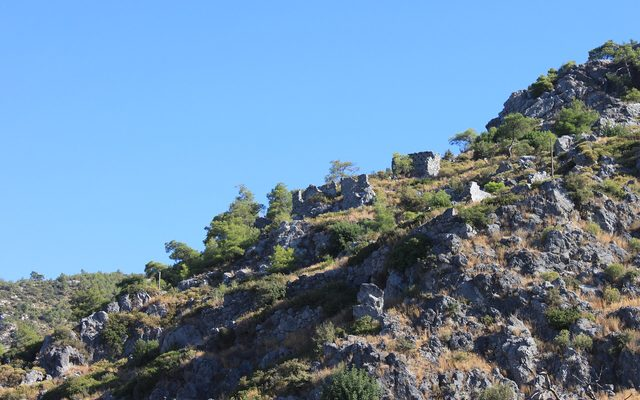
凯拉莫斯古城穆拉 · 考古遗址 凯尔凯内斯古城约兹加特 · 考古遗址
凯尔凯内斯古城约兹加特 · 考古遗址 凯斯金苏鲁洞穴地下城克勒克卡莱 · 地下城
凯斯金苏鲁洞穴地下城克勒克卡莱 · 地下城 钥匙博物馆伊兹密尔 · 博物馆
钥匙博物馆伊兹密尔 · 博物馆 基比拉遗址布尔杜尔 · 考古遗址基利斯博物馆基利斯 · 博物馆
基比拉遗址布尔杜尔 · 考古遗址基利斯博物馆基利斯 · 博物馆 基利斯特拉科尼亚 · 考古遗址
基利斯特拉科尼亚 · 考古遗址 基利特巴希尔城堡博物馆恰纳卡莱 · 博物馆
基利特巴希尔城堡博物馆恰纳卡莱 · 博物馆 基利特巴希尔城堡恰纳卡莱 · 城堡与历史建筑
基利特巴希尔城堡恰纳卡莱 · 城堡与历史建筑 基塔瑙拉古城安塔利亚 · 考古遗址
基塔瑙拉古城安塔利亚 · 考古遗址 克拉罗斯遗址伊兹密尔 · 考古遗址
克拉罗斯遗址伊兹密尔 · 考古遗址 克拉佐美奈遗址伊兹密尔 · 考古遗址
克拉佐美奈遗址伊兹密尔 · 考古遗址 科贾埃利考古博物馆科贾埃利 · 博物馆
科贾埃利考古博物馆科贾埃利 · 博物馆 科洛封古城伊兹密尔 · 考古遗址本都科马纳古城托卡特 · 考古遗址
科洛封古城伊兹密尔 · 考古遗址本都科马纳古城托卡特 · 考古遗址 科努拉尔普博物馆迪兹杰 · 博物馆
科努拉尔普博物馆迪兹杰 · 博物馆 科尼亚考古博物馆科尼亚 · 博物馆
科尼亚考古博物馆科尼亚 · 博物馆 科尼亚阿塔图尔克故居博物馆科尼亚 · 博物馆
科尼亚阿塔图尔克故居博物馆科尼亚 · 博物馆 科尼亚民族志博物馆科尼亚 · 博物馆
科尼亚民族志博物馆科尼亚 · 博物馆 科尼亚全景博物馆科尼亚 · 博物馆科里达拉古城安塔利亚 · 考古遗址
科尼亚全景博物馆科尼亚 · 博物馆科里达拉古城安塔利亚 · 考古遗址 科里科斯与少女城堡梅尔辛 · 城堡与历史建筑
科里科斯与少女城堡梅尔辛 · 城堡与历史建筑 科苏特故居博物馆屈塔希亚 · 博物馆
科苏特故居博物馆屈塔希亚 · 博物馆 科苏特故居博物馆屈塔希亚 · 博物馆
科苏特故居博物馆屈塔希亚 · 博物馆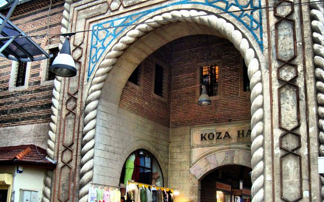
蚕茧客栈布尔萨 · 城堡与历史建筑王陵博物馆与遗址加齐马古萨（法马古斯塔） · 考古遗址 克雷姆纳古城布尔杜尔 · 考古遗址
克雷姆纳古城布尔杜尔 · 考古遗址 库巴达巴德宫科尼亚 · 考古遗址
库巴达巴德宫科尼亚 · 考古遗址 独立战争博物馆安卡拉 · 博物馆
独立战争博物馆安卡拉 · 博物馆 库鲁柯普吕纪念博物馆与阿达纳传统民居阿达纳 · 博物馆
库鲁柯普吕纪念博物馆与阿达纳传统民居阿达纳 · 博物馆 库尔顺卢瀑布自然公园安塔利亚 · 瀑布
库尔顺卢瀑布自然公园安塔利亚 · 瀑布 国民军博物馆巴勒克埃西尔 · 博物馆
国民军博物馆巴勒克埃西尔 · 博物馆 基亚内埃古城安塔利亚 · 考古遗址
基亚内埃古城安塔利亚 · 考古遗址 库迈古城伊兹密尔 · 考古遗址
库迈古城伊兹密尔 · 考古遗址 基齐库斯古城巴勒克埃西尔 · 考古遗址
基齐库斯古城巴勒克埃西尔 · 考古遗址 卡泽姆·卡拉贝基尔帕夏博物馆伊斯坦布尔 · 博物馆
卡泽姆·卡拉贝基尔帕夏博物馆伊斯坦布尔 · 博物馆 科普吕吕峡谷国家公园安塔利亚 · 峡谷
科普吕吕峡谷国家公园安塔利亚 · 峡谷 克普吕帕扎尔桥（阿斯潘多斯桥）安塔利亚 · 城堡与历史建筑
克普吕帕扎尔桥（阿斯潘多斯桥）安塔利亚 · 城堡与历史建筑 科伊杰伊兹湖穆拉 · 湖泊
科伊杰伊兹湖穆拉 · 湖泊 屈尔泰佩遗址开塞利 · 考古遗址
屈尔泰佩遗址开塞利 · 考古遗址 屈塔希亚城堡屈塔希亚 · 城堡与历史建筑屈塔希亚博物馆屈塔希亚 · 博物馆
屈塔希亚城堡屈塔希亚 · 城堡与历史建筑屈塔希亚博物馆屈塔希亚 · 博物馆 小艾瓦瑟尔圣安娜教堂特拉布宗 · 宗教建筑
小艾瓦瑟尔圣安娜教堂特拉布宗 · 宗教建筑 小溪亭（屈吕克苏亭）伊斯坦布尔 · 城堡与历史建筑
小溪亭（屈吕克苏亭）伊斯坦布尔 · 城堡与历史建筑 克尔克拉雷利博物馆克尔克拉雷利 · 博物馆克尔谢希尔博物馆克尔谢希尔 · 博物馆
克尔克拉雷利博物馆克尔克拉雷利 · 博物馆克尔谢希尔博物馆克尔谢希尔 · 博物馆 少女塔伊斯坦布尔 · 城堡与历史建筑
少女塔伊斯坦布尔 · 城堡与历史建筑 红塔安塔利亚 · 城堡与历史建筑
红塔安塔利亚 · 城堡与历史建筑 拉布劳恩达遗址穆拉 · 考古遗址
拉布劳恩达遗址穆拉 · 考古遗址 拉吉纳遗址穆拉 · 考古遗址
拉吉纳遗址穆拉 · 考古遗址 拉拉·穆斯塔法帕夏清真寺加齐马古萨（法马古斯塔） · 宗教建筑兰布萨古城吉尔内（凯里尼亚） · 考古遗址拉莫斯古城安塔利亚 · 考古遗址
拉拉·穆斯塔法帕夏清真寺加齐马古萨（法马古斯塔） · 宗教建筑兰布萨古城吉尔内（凯里尼亚） · 考古遗址拉莫斯古城安塔利亚 · 考古遗址 劳迪西亚遗址代尼兹利 · 考古遗址
劳迪西亚遗址代尼兹利 · 考古遗址 石刻博物馆莱夫科沙（尼科西亚） · 博物馆
石刻博物馆莱夫科沙（尼科西亚） · 博物馆 拉蒂费夫人宅邸纪念馆伊兹密尔 · 博物馆
拉蒂费夫人宅邸纪念馆伊兹密尔 · 博物馆 拉蒂夫奥卢宅邸托卡特 · 博物馆
拉蒂夫奥卢宅邸托卡特 · 博物馆 勒贝多斯古城伊兹密尔 · 考古遗址
勒贝多斯古城伊兹密尔 · 考古遗址 吕基亚文明博物馆与安德里亚卡遗址安塔利亚 · 考古遗址
吕基亚文明博物馆与安德里亚卡遗址安塔利亚 · 考古遗址 利西亚之路穆拉 · 徒步路线
利西亚之路穆拉 · 徒步路线 利米拉遗址安塔利亚 · 考古遗址利瓦帕夏宅邸民族志博物馆卡斯塔莫努 · 博物馆
利米拉遗址安塔利亚 · 考古遗址利瓦帕夏宅邸民族志博物馆卡斯塔莫努 · 博物馆 洛里马古堡穆拉 · 考古遗址
洛里马古堡穆拉 · 考古遗址 洛桑纪念碑与卡拉阿阿奇车站埃迪尔内 · 城堡与历史建筑
洛桑纪念碑与卡拉阿阿奇车站埃迪尔内 · 城堡与历史建筑 海泡石博物馆埃斯基谢希尔 · 博物馆矿业博物馆宗古尔达克 · 博物馆
海泡石博物馆埃斯基谢希尔 · 博物馆矿业博物馆宗古尔达克 · 博物馆 马加尔索斯古城阿达纳 · 考古遗址
马加尔索斯古城阿达纳 · 考古遗址 马格尼西亚遗址艾登 · 考古遗址
马格尼西亚遗址艾登 · 考古遗址 马哈茂德贝伊清真寺卡斯塔莫努 · 宗教建筑
马哈茂德贝伊清真寺卡斯塔莫努 · 宗教建筑 马拉巴迪桥迪亚巴克尔 · 城堡与历史建筑马拉蒂亚阿塔图尔克纪念馆与民族志博物馆马拉蒂亚 · 博物馆
马拉巴迪桥迪亚巴克尔 · 城堡与历史建筑马拉蒂亚阿塔图尔克纪念馆与民族志博物馆马拉蒂亚 · 博物馆 马拉蒂亚博物馆马拉蒂亚 · 博物馆马拉兹吉尔特博物馆穆什 · 博物馆
马拉蒂亚博物馆马拉蒂亚 · 博物馆马拉兹吉尔特博物馆穆什 · 博物馆 马穆雷城堡梅尔辛 · 城堡与历史建筑
马穆雷城堡梅尔辛 · 城堡与历史建筑 马纳夫加特瀑布安塔利亚 · 瀑布
马纳夫加特瀑布安塔利亚 · 瀑布 马尼萨阿克希萨尔博物馆与泰佩墓地马尼萨 · 考古遗址
马尼萨阿克希萨尔博物馆与泰佩墓地马尼萨 · 考古遗址 马尼萨博物馆马尼萨 · 博物馆
马尼萨博物馆马尼萨 · 博物馆 马尔丁博物馆马尔丁 · 博物馆马尔马里斯博物馆穆拉 · 博物馆
马尔丁博物馆马尔丁 · 博物馆马尔马里斯博物馆穆拉 · 博物馆 马斯拉克亭苑伊斯坦布尔 · 城堡与历史建筑
马斯拉克亭苑伊斯坦布尔 · 城堡与历史建筑 纯真博物馆伊斯坦布尔 · 博物馆马泽地下城内夫谢希尔 · 地下城马沙特土丘托卡特 · 考古遗址穆罕默德·阿基夫·埃尔索伊文学博物馆图书馆安卡拉 · 博物馆
纯真博物馆伊斯坦布尔 · 博物馆马泽地下城内夫谢希尔 · 地下城马沙特土丘托卡特 · 考古遗址穆罕默德·阿基夫·埃尔索伊文学博物馆图书馆安卡拉 · 博物馆 穆罕默德·阿基夫·埃尔索伊纪念馆伊斯坦布尔 · 博物馆穆罕默德·贾比尔·阿尔佩尔考古博物馆巴特曼 · 博物馆
穆罕默德·阿基夫·埃尔索伊纪念馆伊斯坦布尔 · 博物馆穆罕默德·贾比尔·阿尔佩尔考古博物馆巴特曼 · 博物馆 梅凯湖科尼亚 · 湖泊
梅凯湖科尼亚 · 湖泊 梅伦河迪兹杰 · 漂流
梅伦河迪兹杰 · 漂流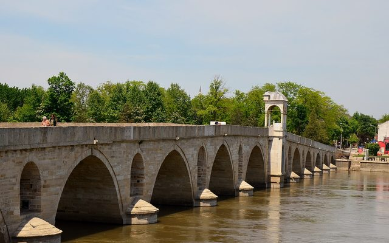
梅里奇桥（迈吉迪耶桥）埃迪尔内 · 城堡与历史建筑 梅尔辛阿塔图尔克故居博物馆梅尔辛 · 博物馆
梅尔辛阿塔图尔克故居博物馆梅尔辛 · 博物馆 梅尔辛少女城堡（克兹卡莱西）梅尔辛 · 城堡与历史建筑
梅尔辛少女城堡（克兹卡莱西）梅尔辛 · 城堡与历史建筑 梅尔辛博物馆梅尔辛 · 博物馆梅尔辛塔尔苏斯博物馆梅尔辛 · 博物馆
梅尔辛博物馆梅尔辛 · 博物馆梅尔辛塔尔苏斯博物馆梅尔辛 · 博物馆 圣母玛利亚之家伊兹密尔 · 宗教建筑
圣母玛利亚之家伊兹密尔 · 宗教建筑 圣母玛利亚修道院吉雷松 · 宗教建筑
圣母玛利亚修道院吉雷松 · 宗教建筑 梅特罗波利斯遗址伊兹密尔 · 考古遗址
梅特罗波利斯遗址伊兹密尔 · 考古遗址 梅夫拉纳博物馆科尼亚 · 博物馆
梅夫拉纳博物馆科尼亚 · 博物馆 梅夫拉维道堂博物馆莱夫科沙（尼科西亚） · 博物馆梅夫拉维修道院博物馆安塔利亚 · 博物馆
梅夫拉维道堂博物馆莱夫科沙（尼科西亚） · 博物馆梅夫拉维修道院博物馆安塔利亚 · 博物馆 梅兹吉特卡莱陵墓梅尔辛 · 考古遗址
梅兹吉特卡莱陵墓梅尔辛 · 考古遗址 梅赫尔门凡城 · 考古遗址
梅赫尔门凡城 · 考古遗址 迈达斯城（亚兹勒卡亚）遗址埃斯基谢希尔 · 考古遗址
迈达斯城（亚兹勒卡亚）遗址埃斯基谢希尔 · 考古遗址 米赫丽玛苏丹清真寺（埃迪尔内门）伊斯坦布尔 · 宗教建筑
米赫丽玛苏丹清真寺（埃迪尔内门）伊斯坦布尔 · 宗教建筑 米拉斯贝钦城堡与遗址穆拉 · 考古遗址
米拉斯贝钦城堡与遗址穆拉 · 考古遗址 米拉斯欧罗莫斯遗址穆拉 · 考古遗址米拉斯石刻博物馆穆拉 · 博物馆赫卡托姆诺斯陵墓（乌宗尤瓦）穆拉 · 考古遗址
米拉斯欧罗莫斯遗址穆拉 · 考古遗址米拉斯石刻博物馆穆拉 · 博物馆赫卡托姆诺斯陵墓（乌宗尤瓦）穆拉 · 考古遗址 米拉斯乌尊尤瓦纪念墓与博物馆综合体穆拉 · 考古遗址
米拉斯乌尊尤瓦纪念墓与博物馆综合体穆拉 · 考古遗址 米拉斯亚索斯鱼市博物馆穆拉 · 博物馆
米拉斯亚索斯鱼市博物馆穆拉 · 博物馆 米利都博物馆艾登 · 博物馆
米利都博物馆艾登 · 博物馆 米利都遗址艾登 · 考古遗址
米利都遗址艾登 · 考古遗址 米马尔·希南与城市博物馆开塞利 · 博物馆
米马尔·希南与城市博物馆开塞利 · 博物馆 迷你土耳其公园伊斯坦布尔 · 博物馆
迷你土耳其公园伊斯坦布尔 · 博物馆 米西斯（摩普苏埃斯提亚）古城阿达纳 · 考古遗址
米西斯（摩普苏埃斯提亚）古城阿达纳 · 考古遗址 米西斯马赛克博物馆阿达纳 · 博物馆
米西斯马赛克博物馆阿达纳 · 博物馆 MKE工业与技术博物馆安卡拉 · 博物馆
MKE工业与技术博物馆安卡拉 · 博物馆 圣加百列修道院马尔丁 · 宗教建筑MTA谢赫瓦尔自然历史博物馆安卡拉 · 博物馆穆朱尔地下城克尔谢希尔 · 地下城
圣加百列修道院马尔丁 · 宗教建筑MTA谢赫瓦尔自然历史博物馆安卡拉 · 博物馆穆朱尔地下城克尔谢希尔 · 地下城 穆达尼亚停战协定纪念馆布尔萨 · 博物馆
穆达尼亚停战协定纪念馆布尔萨 · 博物馆 穆拉迪耶建筑群布尔萨 · 宗教建筑
穆拉迪耶建筑群布尔萨 · 宗教建筑 穆拉迪耶瀑布凡城 · 瀑布
穆拉迪耶瀑布凡城 · 瀑布 穆斯塔法帕夏（西纳索斯）内夫谢希尔 · 城堡与历史建筑
穆斯塔法帕夏（西纳索斯）内夫谢希尔 · 城堡与历史建筑 博德鲁姆摩索拉斯陵墓纪念博物馆穆拉 · 博物馆
博德鲁姆摩索拉斯陵墓纪念博物馆穆拉 · 博物馆 尼多斯遗址穆拉 · 考古遗址
尼多斯遗址穆拉 · 考古遗址 穆拉博物馆穆拉 · 博物馆穆什博物馆穆什 · 博物馆
穆拉博物馆穆拉 · 博物馆穆什博物馆穆什 · 博物馆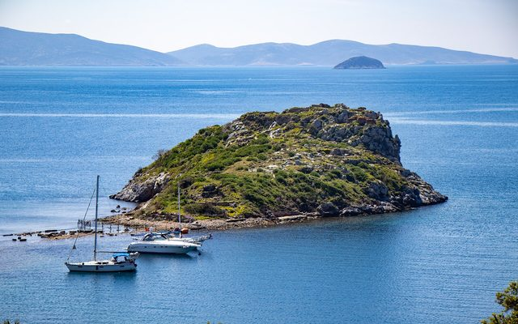
明多斯古城穆拉 · 考古遗址 米拉遗址安塔利亚 · 考古遗址
米拉遗址安塔利亚 · 考古遗址 米乌斯古城艾登 · 考古遗址
米乌斯古城艾登 · 考古遗址 煤气厂博物馆伊斯坦布尔 · 博物馆纳科莱亚与赛义德加齐建筑群埃斯基谢希尔 · 宗教建筑
煤气厂博物馆伊斯坦布尔 · 博物馆纳科莱亚与赛义德加齐建筑群埃斯基谢希尔 · 宗教建筑 纳马兹加赫炮台博物馆恰纳卡莱 · 博物馆
纳马兹加赫炮台博物馆恰纳卡莱 · 博物馆 纳姆伦城堡梅尔辛 · 城堡与历史建筑纳梅克·凯末尔故居博物馆泰基尔达 · 博物馆
纳姆伦城堡梅尔辛 · 城堡与历史建筑纳梅克·凯末尔故居博物馆泰基尔达 · 博物馆 纳默克·凯末尔地牢与博物馆加齐马古萨（法马古斯塔） · 博物馆尼安德里亚古城恰纳卡莱 · 考古遗址
纳默克·凯末尔地牢与博物馆加齐马古萨（法马古斯塔） · 博物馆尼安德里亚古城恰纳卡莱 · 考古遗址 内吉米·伊厄故居民族志博物馆埃迪尔内 · 博物馆
内吉米·伊厄故居民族志博物馆埃迪尔内 · 博物馆 内姆鲁特火山口湖比特利斯 · 湖泊哈哲贝克塔什考古与民俗博物馆内夫谢希尔 · 博物馆哈哲贝克塔什阿塔图尔克故居博物馆内夫谢希尔 · 博物馆
内姆鲁特火山口湖比特利斯 · 湖泊哈哲贝克塔什考古与民俗博物馆内夫谢希尔 · 博物馆哈哲贝克塔什阿塔图尔克故居博物馆内夫谢希尔 · 博物馆 内夫谢希尔博物馆内夫谢希尔 · 博物馆尼吕费尔哈吞慈善厨房（土耳其伊斯兰艺术博物馆）布尔萨 · 博物馆尼代安达瓦尔遗址尼代 · 考古遗址
内夫谢希尔博物馆内夫谢希尔 · 博物馆尼吕费尔哈吞慈善厨房（土耳其伊斯兰艺术博物馆）布尔萨 · 博物馆尼代安达瓦尔遗址尼代 · 考古遗址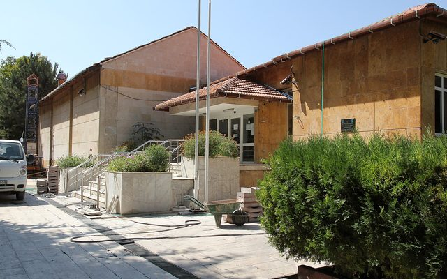
尼代博物馆尼代 · 博物馆 诺提昂古城伊兹密尔 · 考古遗址
诺提昂古城伊兹密尔 · 考古遗址 宁法伊翁（尼夫）宫伊兹密尔 · 城堡与历史建筑
宁法伊翁（尼夫）宫伊兹密尔 · 城堡与历史建筑 尼萨遗址（苏丹希萨尔）艾登 · 考古遗址
尼萨遗址（苏丹希萨尔）艾登 · 考古遗址 中东技术大学科技博物馆安卡拉 · 博物馆
中东技术大学科技博物馆安卡拉 · 博物馆 奥敦帕扎勒现代博物馆埃斯基谢希尔 · 博物馆欧伊诺安达古城穆拉 · 考古遗址
奥敦帕扎勒现代博物馆埃斯基谢希尔 · 博物馆欧伊诺安达古城穆拉 · 考古遗址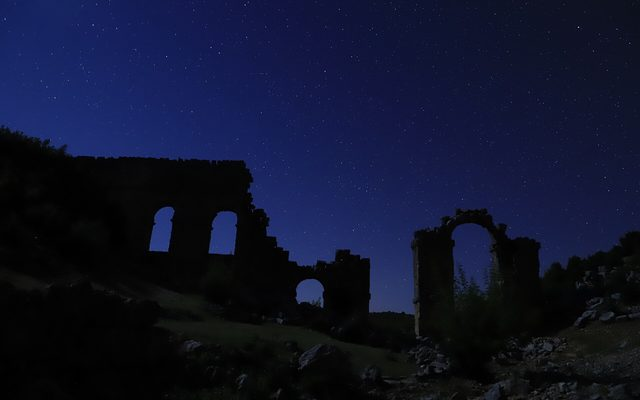
奥尔巴古城梅尔辛 · 考古遗址 奥卢兹土丘阿马西亚 · 考古遗址
奥卢兹土丘阿马西亚 · 考古遗址 奥林波斯遗址安塔利亚 · 考古遗址
奥林波斯遗址安塔利亚 · 考古遗址 十眼桥（底格里斯桥）迪亚巴克尔 · 城堡与历史建筑奥尔杜博物馆奥尔杜 · 博物馆
十眼桥（底格里斯桥）迪亚巴克尔 · 城堡与历史建筑奥尔杜博物馆奥尔杜 · 博物馆 奥尔罕·凯末尔博物馆伊斯坦布尔 · 博物馆
奥尔罕·凯末尔博物馆伊斯坦布尔 · 博物馆 奥斯曼·哈姆迪贝伊博物馆科贾埃利 · 博物馆奥斯曼尼耶博物馆奥斯曼尼耶 · 博物馆奥斯曼民居博物馆布尔萨 · 博物馆
奥斯曼·哈姆迪贝伊博物馆科贾埃利 · 博物馆奥斯曼尼耶博物馆奥斯曼尼耶 · 博物馆奥斯曼民居博物馆布尔萨 · 博物馆 奥赛罗城堡加齐马古萨（法马古斯塔） · 城堡与历史建筑
奥赛罗城堡加齐马古萨（法马古斯塔） · 城堡与历史建筑 奥伊卢姆土丘基利斯 · 考古遗址
奥伊卢姆土丘基利斯 · 考古遗址 帕兰德肯滑雪场埃尔祖鲁姆 · 滑雪场
帕兰德肯滑雪场埃尔祖鲁姆 · 滑雪场 1453全景历史博物馆伊斯坦布尔 · 博物馆
1453全景历史博物馆伊斯坦布尔 · 博物馆 帕里昂古城恰纳卡莱 · 考古遗址
帕里昂古城恰纳卡莱 · 考古遗址 帕塔拉遗址安塔利亚 · 考古遗址
帕塔拉遗址安塔利亚 · 考古遗址 佩达萨古城穆拉 · 考古遗址佩德内利索斯古城安塔利亚 · 考古遗址
佩达萨古城穆拉 · 考古遗址佩德内利索斯古城安塔利亚 · 考古遗址 佩拉博物馆伊斯坦布尔 · 博物馆
佩拉博物馆伊斯坦布尔 · 博物馆 佩尔吉遗址安塔利亚 · 考古遗址佩尔佩雷内古城巴勒克埃西尔 · 考古遗址
佩尔吉遗址安塔利亚 · 考古遗址佩尔佩雷内古城巴勒克埃西尔 · 考古遗址 佩雷遗址阿德亚曼 · 考古遗址
佩雷遗址阿德亚曼 · 考古遗址 佩西努斯遗址埃斯基谢希尔 · 考古遗址
佩西努斯遗址埃斯基谢希尔 · 考古遗址 法塞利斯遗址安塔利亚 · 考古遗址
法塞利斯遗址安塔利亚 · 考古遗址 菲洛斯古城安塔利亚 · 考古遗址
菲洛斯古城安塔利亚 · 考古遗址 福西亚古城（福恰）伊兹密尔 · 考古遗址
福西亚古城（福恰）伊兹密尔 · 考古遗址 皮埃尔·洛蒂博物馆伊斯坦布尔 · 博物馆
皮埃尔·洛蒂博物馆伊斯坦布尔 · 博物馆 皮西迪亚的安提阿伊斯帕尔塔 · 考古遗址帕夫拉戈尼亚的庞培城卡斯塔莫努 · 考古遗址
皮西迪亚的安提阿伊斯帕尔塔 · 考古遗址帕夫拉戈尼亚的庞培城卡斯塔莫努 · 考古遗址 普里埃内遗址艾登 · 考古遗址
普里埃内遗址艾登 · 考古遗址 希皮乌姆河畔普鲁西亚斯（科努拉尔普）迪兹杰 · 考古遗址
希皮乌姆河畔普鲁西亚斯（科努拉尔普）迪兹杰 · 考古遗址 皮德奈要塞穆拉 · 考古遗址
皮德奈要塞穆拉 · 考古遗址 拉赫米·M·科奇博物馆伊斯坦布尔 · 博物馆
拉赫米·M·科奇博物馆伊斯坦布尔 · 博物馆 拉米兵营（拉米图书馆）伊斯坦布尔 · 城堡与历史建筑
拉米兵营（拉米图书馆）伊斯坦布尔 · 城堡与历史建筑 绘画与雕塑博物馆安卡拉 · 博物馆
绘画与雕塑博物馆安卡拉 · 博物馆 雷赞·哈斯博物馆伊斯坦布尔 · 博物馆
雷赞·哈斯博物馆伊斯坦布尔 · 博物馆 罗迪亚波利斯古城安塔利亚 · 考古遗址
罗迪亚波利斯古城安塔利亚 · 考古遗址 里泽阿塔图尔克故居博物馆里泽 · 博物馆
里泽阿塔图尔克故居博物馆里泽 · 博物馆 里泽博物馆里泽 · 博物馆
里泽博物馆里泽 · 博物馆 罗马浴场遗址安卡拉 · 考古遗址
罗马浴场遗址安卡拉 · 考古遗址 鲁梅利堡垒伊斯坦布尔 · 城堡与历史建筑
鲁梅利堡垒伊斯坦布尔 · 城堡与历史建筑 鲁姆卡莱遗址加济安泰普 · 考古遗址
鲁姆卡莱遗址加济安泰普 · 考古遗址 吕斯泰姆帕夏清真寺伊斯坦布尔 · 宗教建筑
吕斯泰姆帕夏清真寺伊斯坦布尔 · 宗教建筑 萨德贝克夫人博物馆伊斯坦布尔 · 博物馆
萨德贝克夫人博物馆伊斯坦布尔 · 博物馆 萨加拉索斯遗址布尔杜尔 · 考古遗址
萨加拉索斯遗址布尔杜尔 · 考古遗址 萨哈比耶经学院开塞利 · 宗教建筑
萨哈比耶经学院开塞利 · 宗教建筑 萨伊特·法伊克·阿巴斯亚内克博物馆伊斯坦布尔 · 博物馆
萨伊特·法伊克·阿巴斯亚内克博物馆伊斯坦布尔 · 博物馆 萨卡里亚博物馆萨卡里亚 · 博物馆
萨卡里亚博物馆萨卡里亚 · 博物馆 萨克勒肯特峡谷穆拉 · 峡谷
萨克勒肯特峡谷穆拉 · 峡谷 萨基普·萨班哲马尔丁城市博物馆马尔丁 · 博物馆
萨基普·萨班哲马尔丁城市博物馆马尔丁 · 博物馆 萨基普·萨班哲博物馆伊斯坦布尔 · 博物馆
萨基普·萨班哲博物馆伊斯坦布尔 · 博物馆 萨拉米斯遗址加齐马古萨（法马古斯塔） · 考古遗址
萨拉米斯遗址加齐马古萨（法马古斯塔） · 考古遗址 萨尔达湖布尔杜尔 · 湖泊
萨尔达湖布尔杜尔 · 湖泊 SALT加拉塔伊斯坦布尔 · 博物馆
SALT加拉塔伊斯坦布尔 · 博物馆 萨姆松博物馆萨姆松 · 博物馆
萨姆松博物馆萨姆松 · 博物馆 萨潘贾湖萨卡里亚 · 湖泊
萨潘贾湖萨卡里亚 · 湖泊 萨拉特勒“四十眼”地下城阿克萨赖 · 地下城
萨拉特勒“四十眼”地下城阿克萨赖 · 地下城 萨第斯遗址马尼萨 · 考古遗址
萨第斯遗址马尼萨 · 考古遗址 萨里萨（库沙克勒）锡瓦斯 · 考古遗址
萨里萨（库沙克勒）锡瓦斯 · 考古遗址 萨勒汗客栈内夫谢希尔 · 城堡与历史建筑萨勒卡默什滑雪场卡尔斯 · 滑雪场
萨勒汗客栈内夫谢希尔 · 城堡与历史建筑萨勒卡默什滑雪场卡尔斯 · 滑雪场 萨勒卡亚罗马浴场约兹加特 · 考古遗址
萨勒卡亚罗马浴场约兹加特 · 考古遗址 萨塔拉古城居米什哈内 · 考古遗址塞巴斯托波利斯古城托卡特 · 考古遗址
萨塔拉古城居米什哈内 · 考古遗址塞巴斯托波利斯古城托卡特 · 考古遗址 塞贝达古港安塔利亚 · 考古遗址
塞贝达古港安塔利亚 · 考古遗址 塞迪尔岛遗址穆拉 · 考古遗址
塞迪尔岛遗址穆拉 · 考古遗址 SEKA造纸博物馆科贾埃利 · 博物馆
SEKA造纸博物馆科贾埃利 · 博物馆 潘菲利亚的塞琉西亚安塔利亚 · 考古遗址
潘菲利亚的塞琉西亚安塔利亚 · 考古遗址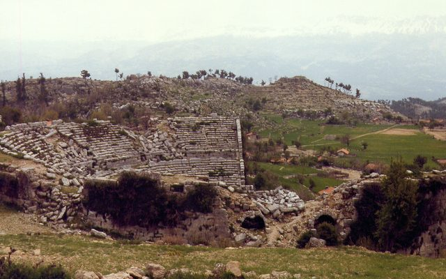
塞尔盖古城安塔利亚 · 考古遗址 塞利米耶清真寺莱夫科沙（尼科西亚） · 宗教建筑
塞利米耶清真寺莱夫科沙（尼科西亚） · 宗教建筑 塞利努斯古城安塔利亚 · 考古遗址
塞利努斯古城安塔利亚 · 考古遗址 锡德博物馆安塔利亚 · 博物馆
锡德博物馆安塔利亚 · 博物馆 锡德遗址安塔利亚 · 考古遗址
锡德遗址安塔利亚 · 考古遗址 西迪马古城穆拉 · 考古遗址锡尔特大清真寺锡尔特 · 宗教建筑
西迪马古城穆拉 · 考古遗址锡尔特大清真寺锡尔特 · 宗教建筑 锡利夫凯阿斯特姆洞梅尔辛 · 自然景观
锡利夫凯阿斯特姆洞梅尔辛 · 自然景观 锡利夫凯阿塔图尔克故居与民族志博物馆梅尔辛 · 博物馆
锡利夫凯阿塔图尔克故居与民族志博物馆梅尔辛 · 博物馆 锡利夫凯圣特克拉遗址梅尔辛 · 考古遗址
锡利夫凯圣特克拉遗址梅尔辛 · 考古遗址 锡利夫凯天堂与地狱天坑梅尔辛 · 自然景观
锡利夫凯天堂与地狱天坑梅尔辛 · 自然景观 锡利夫凯城堡梅尔辛 · 城堡与历史建筑
锡利夫凯城堡梅尔辛 · 城堡与历史建筑 锡利夫凯博物馆梅尔辛 · 博物馆
锡利夫凯博物馆梅尔辛 · 博物馆 锡利夫凯纳尔勒库尤马赛克博物馆梅尔辛 · 博物馆
锡利夫凯纳尔勒库尤马赛克博物馆梅尔辛 · 博物馆 西莱与圣海伦娜教堂科尼亚 · 宗教建筑
西莱与圣海伦娜教堂科尼亚 · 宗教建筑 西利翁古城安塔利亚 · 考古遗址锡尔万阿塔图尔克故居博物馆迪亚巴克尔 · 博物馆
西利翁古城安塔利亚 · 考古遗址锡尔万阿塔图尔克故居博物馆迪亚巴克尔 · 博物馆 西美纳遗址安塔利亚 · 考古遗址锡诺普阿尔斯兰托伦拉尔民俗博物馆锡诺普 · 博物馆
西美纳遗址安塔利亚 · 考古遗址锡诺普阿尔斯兰托伦拉尔民俗博物馆锡诺普 · 博物馆 锡诺普博物馆锡诺普 · 博物馆
锡诺普博物馆锡诺普 · 博物馆 西尔凯利土丘阿达纳 · 考古遗址
西尔凯利土丘阿达纳 · 考古遗址 锡瓦斯考古博物馆锡瓦斯 · 博物馆
锡瓦斯考古博物馆锡瓦斯 · 博物馆 锡瓦斯阿塔图尔克与大会博物馆锡瓦斯 · 博物馆
锡瓦斯阿塔图尔克与大会博物馆锡瓦斯 · 博物馆 索贝索斯古城内夫谢希尔 · 考古遗址索贝索斯遗址内夫谢希尔 · 考古遗址索夫拉兹纪念墓阿德亚曼 · 考古遗址
索贝索斯古城内夫谢希尔 · 考古遗址索贝索斯遗址内夫谢希尔 · 考古遗址索夫拉兹纪念墓阿德亚曼 · 考古遗址 索夫塔城堡梅尔辛 · 城堡与历史建筑
索夫塔城堡梅尔辛 · 城堡与历史建筑 索利-庞培城梅尔辛 · 考古遗址
索利-庞培城梅尔辛 · 考古遗址 索利遗址莱夫凯（莱夫卡） · 考古遗址索格马塔尔尚勒乌尔法 · 考古遗址
索利遗址莱夫凯（莱夫卡） · 考古遗址索格马塔尔尚勒乌尔法 · 考古遗址 帕多瓦圣安东尼教堂伊斯坦布尔 · 宗教建筑
帕多瓦圣安东尼教堂伊斯坦布尔 · 宗教建筑 圣巴拿巴修道院加齐马古萨（法马古斯塔） · 宗教建筑
圣巴拿巴修道院加齐马古萨（法马古斯塔） · 宗教建筑 圣伊拉里翁城堡吉尔内（凯里尼亚） · 城堡与历史建筑
圣伊拉里翁城堡吉尔内（凯里尼亚） · 城堡与历史建筑 圣彼得纪念博物馆哈塔伊 · 博物馆
圣彼得纪念博物馆哈塔伊 · 博物馆 圣西蒙修道院哈塔伊 · 宗教建筑
圣西蒙修道院哈塔伊 · 宗教建筑 斯特拉托尼凯亚遗址穆拉 · 考古遗址
斯特拉托尼凯亚遗址穆拉 · 考古遗址 巴耶济德二世建筑群健康博物馆埃迪尔内 · 博物馆
巴耶济德二世建筑群健康博物馆埃迪尔内 · 博物馆 苏丹艾哈迈德清真寺（蓝色清真寺）伊斯坦布尔 · 宗教建筑
苏丹艾哈迈德清真寺（蓝色清真寺）伊斯坦布尔 · 宗教建筑 苏丹艾哈迈德广场（竞技场）伊斯坦布尔 · 考古遗址
苏丹艾哈迈德广场（竞技场）伊斯坦布尔 · 考古遗址 苏丹客栈阿克萨赖 · 城堡与历史建筑苏丹之路埃迪尔内 · 徒步路线
苏丹客栈阿克萨赖 · 城堡与历史建筑苏丹之路埃迪尔内 · 徒步路线 苏拉古城安塔利亚 · 考古遗址
苏拉古城安塔利亚 · 考古遗址 圣基拉科斯亚美尼亚教堂迪亚巴克尔 · 宗教建筑
圣基拉科斯亚美尼亚教堂迪亚巴克尔 · 宗教建筑 苏乌奇图瀑布布尔萨 · 瀑布
苏乌奇图瀑布布尔萨 · 瀑布 瑟于特埃尔图鲁尔加齐博物馆比莱吉克 · 博物馆
瑟于特埃尔图鲁尔加齐博物馆比莱吉克 · 博物馆 苏莱曼清真寺伊斯坦布尔 · 宗教建筑
苏莱曼清真寺伊斯坦布尔 · 宗教建筑 苏美拉修道院特拉布宗 · 宗教建筑塔赫塔库什拉尔民俗博物馆巴勒克埃西尔 · 博物馆塔克西亚尔希斯纪念博物馆巴勒克埃西尔 · 博物馆
苏美拉修道院特拉布宗 · 宗教建筑塔赫塔库什拉尔民俗博物馆巴勒克埃西尔 · 博物馆塔克西亚尔希斯纪念博物馆巴勒克埃西尔 · 博物馆 塔普雷利古城梅尔辛 · 考古遗址
塔普雷利古城梅尔辛 · 考古遗址 锡诺普历史监狱锡诺普 · 城堡与历史建筑
锡诺普历史监狱锡诺普 · 城堡与历史建筑 塔尔苏斯古罗马大道梅尔辛 · 考古遗址
塔尔苏斯古罗马大道梅尔辛 · 考古遗址 塔尔苏斯格兹卢库莱土丘梅尔辛 · 考古遗址
塔尔苏斯格兹卢库莱土丘梅尔辛 · 考古遗址 塔尔苏斯克娄巴特拉门与古道梅尔辛 · 考古遗址
塔尔苏斯克娄巴特拉门与古道梅尔辛 · 考古遗址 塔尔苏斯圣保罗纪念博物馆梅尔辛 · 博物馆
塔尔苏斯圣保罗纪念博物馆梅尔辛 · 博物馆 塔尔苏斯圣保罗井梅尔辛 · 宗教建筑
塔尔苏斯圣保罗井梅尔辛 · 宗教建筑 塔特拉林地下城内夫谢希尔 · 地下城塔伊丰·塔利普奥卢打字机博物馆埃斯基谢希尔 · 博物馆
塔特拉林地下城内夫谢希尔 · 地下城塔伊丰·塔利普奥卢打字机博物馆埃斯基谢希尔 · 博物馆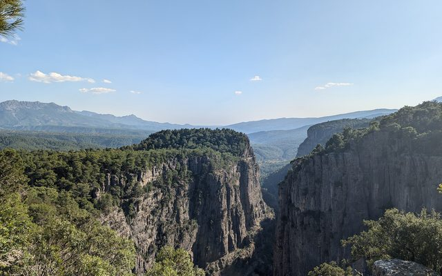
塔泽峡谷安塔利亚 · 峡谷 阿达纳石桥阿达纳 · 城堡与历史建筑
阿达纳石桥阿达纳 · 城堡与历史建筑 阿尔斯兰·埃伊杰双耳瓶博物馆梅尔辛 · 博物馆
阿尔斯兰·埃伊杰双耳瓶博物馆梅尔辛 · 博物馆 塔舒朱阿塔图尔克故居梅尔辛 · 博物馆
塔舒朱阿塔图尔克故居梅尔辛 · 博物馆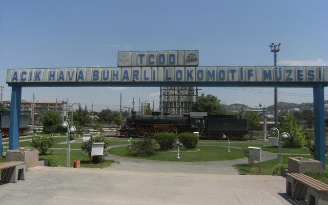
土耳其国铁露天蒸汽机车博物馆安卡拉 · 博物馆 马勒柯伊火车站博物馆安卡拉 · 博物馆
马勒柯伊火车站博物馆安卡拉 · 博物馆 泰缪萨古城安塔利亚 · 考古遗址泰基尔达穆拉特勒阿塔图尔克故居博物馆泰基尔达 · 博物馆
泰缪萨古城安塔利亚 · 考古遗址泰基尔达穆拉特勒阿塔图尔克故居博物馆泰基尔达 · 博物馆 泰基尔达博物馆泰基尔达 · 博物馆
泰基尔达博物馆泰基尔达 · 博物馆 泰凯柯伊洞穴萨姆松 · 考古遗址
泰凯柯伊洞穴萨姆松 · 考古遗址 特奥斯遗址伊兹密尔 · 考古遗址
特奥斯遗址伊兹密尔 · 考古遗址 特尔梅索斯遗址安塔利亚 · 考古遗址
特尔梅索斯遗址安塔利亚 · 考古遗址 狄奥多西广场伊斯坦布尔 · 考古遗址
狄奥多西广场伊斯坦布尔 · 考古遗址 狄奥多西城墙伊斯坦布尔 · 城堡与历史建筑蒂尔巴沙尔城堡加济安泰普 · 城堡与历史建筑
狄奥多西城墙伊斯坦布尔 · 城堡与历史建筑蒂尔巴沙尔城堡加济安泰普 · 城堡与历史建筑 蒂尔门土丘加济安泰普 · 考古遗址
蒂尔门土丘加济安泰普 · 考古遗址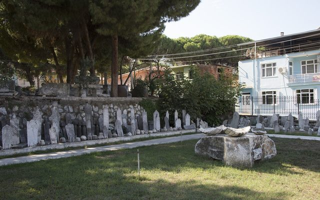
蒂雷博物馆伊兹密尔 · 博物馆 提图斯隧道（韦斯巴芗隧道）哈塔伊 · 考古遗址
提图斯隧道（韦斯巴芗隧道）哈塔伊 · 考古遗址 托法什安纳托利亚车辆博物馆布尔萨 · 博物馆托卡特阿塔图尔克故居与民俗博物馆托卡特 · 博物馆
托法什安纳托利亚车辆博物馆布尔萨 · 博物馆托卡特阿塔图尔克故居与民俗博物馆托卡特 · 博物馆 托卡特博物馆托卡特 · 博物馆
托卡特博物馆托卡特 · 博物馆 托卡特石客栈（沃伊沃达客栈）托卡特 · 城堡与历史建筑
托卡特石客栈（沃伊沃达客栈）托卡特 · 城堡与历史建筑 托普卡帕宫伊斯坦布尔 · 城堡与历史建筑
托普卡帕宫伊斯坦布尔 · 城堡与历史建筑 托尔图姆瀑布埃尔祖鲁姆 · 瀑布
托尔图姆瀑布埃尔祖鲁姆 · 瀑布 特拉布宗阿塔图尔克别墅特拉布宗 · 博物馆
特拉布宗阿塔图尔克别墅特拉布宗 · 博物馆 特拉布宗圣索菲亚特拉布宗 · 宗教建筑
特拉布宗圣索菲亚特拉布宗 · 宗教建筑 特拉布宗博物馆（科斯塔基宅邸）特拉布宗 · 博物馆
特拉布宗博物馆（科斯塔基宅邸）特拉布宗 · 博物馆 特拉勒斯古城艾登 · 考古遗址
特拉勒斯古城艾登 · 考古遗址 特雷本纳古城安塔利亚 · 考古遗址
特雷本纳古城安塔利亚 · 考古遗址 特洛伊博物馆恰纳卡莱 · 博物馆
特洛伊博物馆恰纳卡莱 · 博物馆 特里萨古城安塔利亚 · 考古遗址
特里萨古城安塔利亚 · 考古遗址 通杰利博物馆通杰利 · 博物馆
通杰利博物馆通杰利 · 博物馆 图兹湖（盐湖）阿克萨赖 · 湖泊
图兹湖（盐湖）阿克萨赖 · 湖泊 蒂亚纳古城与罗马水池（凯梅尔希萨尔）尼代 · 考古遗址
蒂亚纳古城与罗马水池（凯梅尔希萨尔）尼代 · 考古遗址 提贝里索斯古城安塔利亚 · 考古遗址
提贝里索斯古城安塔利亚 · 考古遗址 土耳其航空协会博物馆安卡拉 · 博物馆
土耳其航空协会博物馆安卡拉 · 博物馆 土耳其宗教基金会书法博物馆伊斯坦布尔 · 博物馆
土耳其宗教基金会书法博物馆伊斯坦布尔 · 博物馆 土耳其伊斯兰艺术博物馆伊斯坦布尔 · 博物馆埃迪尔内土耳其伊斯兰艺术博物馆埃迪尔内 · 博物馆
土耳其伊斯兰艺术博物馆伊斯坦布尔 · 博物馆埃迪尔内土耳其伊斯兰艺术博物馆埃迪尔内 · 博物馆 土耳其伊斯兰艺术与民族志博物馆埃尔祖鲁姆 · 博物馆
土耳其伊斯兰艺术与民族志博物馆埃尔祖鲁姆 · 博物馆 土耳其劳动银行博物馆伊斯坦布尔 · 博物馆
土耳其劳动银行博物馆伊斯坦布尔 · 博物馆 乌卢贝峡谷自然公园乌沙克 · 峡谷乌卢博尔卢博物馆伊斯帕尔塔 · 博物馆
乌卢贝峡谷自然公园乌沙克 · 峡谷乌卢博尔卢博物馆伊斯帕尔塔 · 博物馆 乌卢詹拉尔监狱博物馆安卡拉 · 博物馆
乌卢詹拉尔监狱博物馆安卡拉 · 博物馆 乌卢达山滑雪场布尔萨 · 滑雪场
乌卢达山滑雪场布尔萨 · 滑雪场 乌宗贾布尔奇遗址梅尔辛 · 考古遗址
乌宗贾布尔奇遗址梅尔辛 · 考古遗址 乌尊湖特拉布宗 · 湖泊
乌尊湖特拉布宗 · 湖泊 乌沙克博物馆乌沙克 · 博物馆
乌沙克博物馆乌沙克 · 博物馆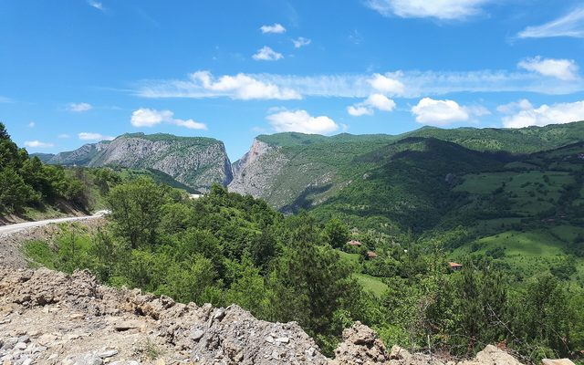
瓦拉峡谷卡斯塔莫努 · 峡谷 凡湖凡城 · 湖泊
凡湖凡城 · 湖泊 凡城堡凡城 · 城堡与历史建筑
凡城堡凡城 · 城堡与历史建筑 凡博物馆凡城 · 博物馆
凡博物馆凡城 · 博物馆 瓦尔达桥阿达纳 · 城堡与历史建筑维泽圣索菲亚（加齐·苏莱曼帕夏清真寺）克尔克拉雷利 · 宗教建筑
瓦尔达桥阿达纳 · 城堡与历史建筑维泽圣索菲亚（加齐·苏莱曼帕夏清真寺）克尔克拉雷利 · 宗教建筑 沃尼宫殿莱夫凯（莱夫卡） · 考古遗址
沃尼宫殿莱夫凯（莱夫卡） · 考古遗址 叶海亚·凯末尔博物馆伊斯坦布尔 · 博物馆
叶海亚·凯末尔博物馆伊斯坦布尔 · 博物馆 亚尔瓦奇博物馆伊斯帕尔塔 · 博物馆
亚尔瓦奇博物馆伊斯帕尔塔 · 博物馆 燃烧之石（喀迈拉）安塔利亚 · 自然景观
燃烧之石（喀迈拉）安塔利亚 · 自然景观 亚纳克汗遗址梅尔辛 · 考古遗址
亚纳克汗遗址梅尔辛 · 考古遗址 七湖国家公园博卢 · 湖泊
七湖国家公园博卢 · 湖泊 七塔堡伊斯坦布尔 · 城堡与历史建筑
七塔堡伊斯坦布尔 · 城堡与历史建筑 耶尼谢希尔谢马基故居博物馆布尔萨 · 博物馆
耶尼谢希尔谢马基故居博物馆布尔萨 · 博物馆 地下水宫（耶莱巴坦）伊斯坦布尔 · 城堡与历史建筑
地下水宫（耶莱巴坦）伊斯坦布尔 · 城堡与历史建筑 耶塞梅克遗址加济安泰普 · 考古遗址
耶塞梅克遗址加济安泰普 · 考古遗址 耶希尔希萨尔索安勒谷遗址开塞利 · 考古遗址
耶希尔希萨尔索安勒谷遗址开塞利 · 考古遗址 耶希洛瓦土丘伊兹密尔 · 考古遗址
耶希洛瓦土丘伊兹密尔 · 考古遗址 凹槽宣礼塔清真寺安塔利亚 · 宗教建筑
凹槽宣礼塔清真寺安塔利亚 · 宗教建筑 约兹加特博物馆约兹加特 · 博物馆
约兹加特博物馆约兹加特 · 博物馆 尤穆克泰佩土丘梅尔辛 · 考古遗址
尤穆克泰佩土丘梅尔辛 · 考古遗址 约鲁克·阿里·埃费故居博物馆艾登 · 博物馆
约鲁克·阿里·埃费故居博物馆艾登 · 博物馆 约鲁克村卡拉比克 · 城堡与历史建筑
约鲁克村卡拉比克 · 城堡与历史建筑 行走的别墅（亚洛瓦）亚洛瓦 · 博物馆
行走的别墅（亚洛瓦）亚洛瓦 · 博物馆 蛇堡阿达纳 · 城堡与历史建筑
蛇堡阿达纳 · 城堡与历史建筑 耶尔德兹瓷器厂伊斯坦布尔 · 博物馆
耶尔德兹瓷器厂伊斯坦布尔 · 博物馆 耶尔德兹宫伊斯坦布尔 · 城堡与历史建筑
耶尔德兹宫伊斯坦布尔 · 城堡与历史建筑 耶尔马兹·比于克埃尔申蜡像馆埃斯基谢希尔 · 博物馆
耶尔马兹·比于克埃尔申蜡像馆埃斯基谢希尔 · 博物馆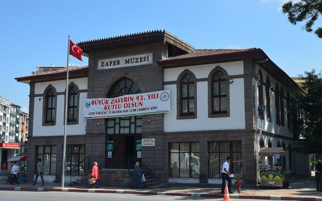
胜利博物馆阿菲永卡拉希萨尔 · 博物馆 扎曼特河阿达纳 · 漂流
扎曼特河阿达纳 · 漂流 扎扎丁客栈科尼亚 · 城堡与历史建筑
扎扎丁客栈科尼亚 · 城堡与历史建筑 泽基·穆伦艺术博物馆穆拉 · 博物馆
泽基·穆伦艺术博物馆穆拉 · 博物馆 曾吉巴尔城堡（伊索拉）科尼亚 · 考古遗址
曾吉巴尔城堡（伊索拉）科尼亚 · 考古遗址 泽尔泽万城堡迪亚巴克尔 · 考古遗址
泽尔泽万城堡迪亚巴克尔 · 考古遗址 宙格玛马赛克博物馆加济安泰普 · 博物馆
宙格玛马赛克博物馆加济安泰普 · 博物馆 宙格玛遗址加济安泰普 · 考古遗址
宙格玛遗址加济安泰普 · 考古遗址 齐尔城堡里泽 · 城堡与历史建筑
齐尔城堡里泽 · 城堡与历史建筑 津吉里耶（辛贾里耶）经学院迪亚巴克尔 · 宗教建筑
津吉里耶（辛贾里耶）经学院迪亚巴克尔 · 宗教建筑 津吉尔利土丘（萨马尔）加济安泰普 · 考古遗址
津吉尔利土丘（萨马尔）加济安泰普 · 考古遗址 齐亚·格卡尔普博物馆迪亚巴克尔 · 博物馆
齐亚·格卡尔普博物馆迪亚巴克尔 · 博物馆 伊斯坦布尔发电厂能源博物馆伊斯坦布尔 · 博物馆
伊斯坦布尔发电厂能源博物馆伊斯坦布尔 · 博物馆 恰姆勒克蒸汽机车博物馆伊兹密尔 · 博物馆
恰姆勒克蒸汽机车博物馆伊兹密尔 · 博物馆 恰纳卡莱海军博物馆恰纳卡莱 · 博物馆恰纳卡莱史诗展示中心恰纳卡莱 · 博物馆恰纳卡莱红新月会情景再现区恰纳卡莱 · 博物馆
恰纳卡莱海军博物馆恰纳卡莱 · 博物馆恰纳卡莱史诗展示中心恰纳卡莱 · 博物馆恰纳卡莱红新月会情景再现区恰纳卡莱 · 博物馆 昌克勒博物馆昌克勒 · 博物馆
昌克勒博物馆昌克勒 · 博物馆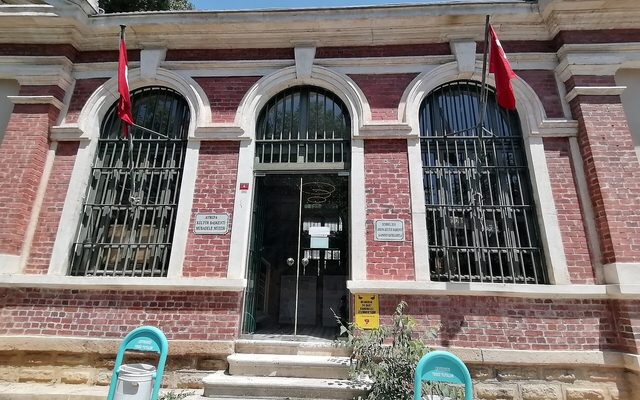
恰塔尔贾人口交换博物馆伊斯坦布尔 · 博物馆 恰特厄伦遗址梅尔辛 · 考古遗址
恰特厄伦遗址梅尔辛 · 考古遗址 恰武什泰佩城堡凡城 · 城堡与历史建筑
恰武什泰佩城堡凡城 · 城堡与历史建筑 恰约尼土丘迪亚巴克尔 · 考古遗址
恰约尼土丘迪亚巴克尔 · 考古遗址 当代玻璃艺术博物馆埃斯基谢希尔 · 博物馆
当代玻璃艺术博物馆埃斯基谢希尔 · 博物馆 君士坦丁纪念柱（切姆贝尔利塔什）伊斯坦布尔 · 城堡与历史建筑
君士坦丁纪念柱（切姆贝尔利塔什）伊斯坦布尔 · 城堡与历史建筑 钩子客栈拉赫米·科奇博物馆安卡拉 · 博物馆切夫利克遗址哈塔伊 · 考古遗址
钩子客栈拉赫米·科奇博物馆安卡拉 · 博物馆切夫利克遗址哈塔伊 · 考古遗址 切什梅博物馆伊兹密尔 · 博物馆
切什梅博物馆伊兹密尔 · 博物馆 屈塔希亚瓷砖博物馆屈塔希亚 · 博物馆
屈塔希亚瓷砖博物馆屈塔希亚 · 博物馆 乔鲁赫河阿尔特温 · 漂流
乔鲁赫河阿尔特温 · 漂流 乔鲁姆博物馆乔鲁姆 · 博物馆
乔鲁姆博物馆乔鲁姆 · 博物馆 恰尔德尔湖阿尔达汉 · 湖泊厄德米什博物馆伊兹密尔 · 博物馆
恰尔德尔湖阿尔达汉 · 湖泊厄德米什博物馆伊兹密尔 · 博物馆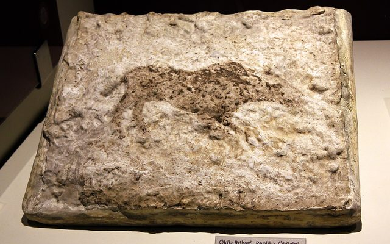
厄居兹伊尼洞穴安塔利亚 · 考古遗址 厄居兹吕遗址梅尔辛 · 考古遗址
厄居兹吕遗址梅尔辛 · 考古遗址 厄兹科纳克地下城内夫谢希尔 · 地下城
厄兹科纳克地下城内夫谢希尔 · 地下城 于尔居普博物馆内夫谢希尔 · 博物馆
于尔居普博物馆内夫谢希尔 · 博物馆 三座陵墓埃尔祖鲁姆 · 宗教建筑
三座陵墓埃尔祖鲁姆 · 宗教建筑 于恰亚克勒别墅遗址梅尔辛 · 考古遗址伊德罗斯古城安塔利亚 · 考古遗址
于恰亚克勒别墅遗址梅尔辛 · 考古遗址伊德罗斯古城安塔利亚 · 考古遗址 伊尔汗·科曼雕塑与绘画博物馆埃迪尔内 · 博物馆
伊尔汗·科曼雕塑与绘画博物馆埃迪尔内 · 博物馆 伊尔特·乌泽尔医学与牙科博物馆阿达纳 · 博物馆
伊尔特·乌泽尔医学与牙科博物馆阿达纳 · 博物馆 伊姆拉霍尔·伊利亚斯贝伊清真寺（斯图迪奥斯修道院）伊斯坦布尔 · 宗教建筑伊诺努战役指挥部博物馆埃斯基谢希尔 · 博物馆
伊姆拉霍尔·伊利亚斯贝伊清真寺（斯图迪奥斯修道院）伊斯坦布尔 · 宗教建筑伊诺努战役指挥部博物馆埃斯基谢希尔 · 博物馆 伊沙克帕夏宫阿勒 · 城堡与历史建筑
伊沙克帕夏宫阿勒 · 城堡与历史建筑 伊斯凯莱圣像博物馆伊斯凯莱（特里科莫） · 博物馆伊斯肯德伦海军博物馆哈塔伊 · 博物馆
伊斯凯莱圣像博物馆伊斯凯莱（特里科莫） · 博物馆伊斯肯德伦海军博物馆哈塔伊 · 博物馆 伊斯兰科学技术史博物馆伊斯坦布尔 · 博物馆
伊斯兰科学技术史博物馆伊斯坦布尔 · 博物馆 伊斯麦特·伊诺努故居博物馆伊斯坦布尔 · 博物馆
伊斯麦特·伊诺努故居博物馆伊斯坦布尔 · 博物馆 伊斯坦布尔考古博物馆伊斯坦布尔 · 博物馆
伊斯坦布尔考古博物馆伊斯坦布尔 · 博物馆 伊斯坦布尔海军博物馆伊斯坦布尔 · 博物馆
伊斯坦布尔海军博物馆伊斯坦布尔 · 博物馆 加拉塔塔伊斯坦布尔 · 城堡与历史建筑
加拉塔塔伊斯坦布尔 · 城堡与历史建筑 伊斯坦布尔航空博物馆伊斯坦布尔 · 博物馆伊斯坦布尔机场博物馆伊斯坦布尔 · 博物馆
伊斯坦布尔航空博物馆伊斯坦布尔 · 博物馆伊斯坦布尔机场博物馆伊斯坦布尔 · 博物馆 伊斯坦布尔现代艺术博物馆伊斯坦布尔 · 博物馆
伊斯坦布尔现代艺术博物馆伊斯坦布尔 · 博物馆 伊斯坦布尔玩具博物馆伊斯坦布尔 · 博物馆
伊斯坦布尔玩具博物馆伊斯坦布尔 · 博物馆 伊兹密尔考古博物馆伊兹密尔 · 博物馆
伊兹密尔考古博物馆伊兹密尔 · 博物馆 伊兹密尔阿塔图尔克博物馆伊兹密尔 · 博物馆
伊兹密尔阿塔图尔克博物馆伊兹密尔 · 博物馆 伊兹密尔文化艺术工厂伊兹密尔 · 博物馆
伊兹密尔文化艺术工厂伊兹密尔 · 博物馆 伊兹密尔绘画与雕塑博物馆伊兹密尔 · 博物馆
伊兹密尔绘画与雕塑博物馆伊兹密尔 · 博物馆 伊兹密特地震纪念与防灾博物馆科贾埃利 · 博物馆
伊兹密特地震纪念与防灾博物馆科贾埃利 · 博物馆 伊兹尼克博物馆布尔萨 · 博物馆
伊兹尼克博物馆布尔萨 · 博物馆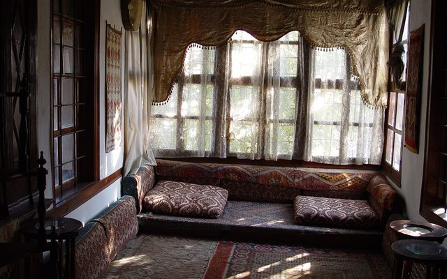
伊泽特·科云奥卢城市博物馆科尼亚 · 博物馆 尚勒乌尔法考古博物馆尚勒乌尔法 · 博物馆
尚勒乌尔法考古博物馆尚勒乌尔法 · 博物馆 尚勒乌尔法城堡尚勒乌尔法 · 城堡与历史建筑
尚勒乌尔法城堡尚勒乌尔法 · 城堡与历史建筑 沙皮努瓦乔鲁姆 · 考古遗址
沙皮努瓦乔鲁姆 · 考古遗址 沙尔（卡帕多奇亚科马纳）阿达纳 · 考古遗址
沙尔（卡帕多奇亚科马纳）阿达纳 · 考古遗址 沙拉普萨客栈安塔利亚 · 城堡与历史建筑
沙拉普萨客栈安塔利亚 · 城堡与历史建筑 谢宾卡拉希萨尔阿塔图尔克故居博物馆吉雷松 · 博物馆
谢宾卡拉希萨尔阿塔图尔克故居博物馆吉雷松 · 博物馆 王子清真寺（谢赫扎德清真寺）伊斯坦布尔 · 宗教建筑
王子清真寺（谢赫扎德清真寺）伊斯坦布尔 · 宗教建筑 谢雷菲耶（狄奥多西）蓄水池伊斯坦布尔 · 城堡与历史建筑
谢雷菲耶（狄奥多西）蓄水池伊斯坦布尔 · 城堡与历史建筑 希林杰村伊兹密尔 · 城堡与历史建筑舒阿卜城尚勒乌尔法 · 考古遗址
希林杰村伊兹密尔 · 城堡与历史建筑舒阿卜城尚勒乌尔法 · 考古遗址